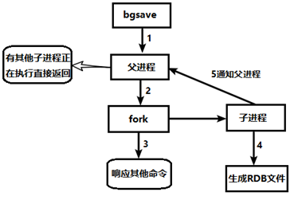
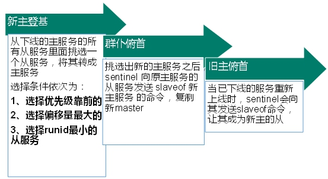

Redis是一个开源，高级的键值存储和一个适用的解决方案，用于构建高性能，可扩展的Web应用程序。
Redis有三个主要特点，使它优越于其它键值数据存储系统：
Redis将其数据库完全保存在内存中，仅使用磁盘进行持久化。
与其它键值数据存储相比，Redis有一组相对丰富的数据类型。
Redis可以将数据复制到任意数量的从机中。
Redis的简介 Redis的优点
异常快 - Redis非常快，每秒可执行大约81000次的写/设置(SET)操作，每秒大约可执行110000次的读取/获取(GET)操作。
支持丰富的数据类型 - Redis支持开发人员常用的大多数数据类型，例如列表，集合，排序集和散列等等。这使得Redis很容易被用来解决各种问题，因为我们知道哪些问题可以更好使用地哪些数据类型来处理解决。
操作具有原子性 - 所有Redis操作都是原子操作，这确保如果两个客户端并发访问，Redis服务器能接收更新的值。
多实用工具 - Redis是一个多实用工具，可用于多种用例，如：缓存，消息队列(Redis本地支持发布/订阅)，应用程序中的任何短期数据，例如，web应用程序中的会话，网页命中计数等。
Redis与其他的键值数据库
Redis是键值数据库系统的不同进化路线，它的值可以包含更复杂的数据类型，可在这些数据类型上定义原子操作。
Redis是一个内存数据库，但在磁盘数据库上是持久的，因此它代表了一个不同的权衡，在这种情况下，在不能大于存储器(内存)的数据集的限制下实现非常高的写和读速度。
内存数据库的另一个优点是，它与磁盘上的相同数据结构相比，复杂数据结构在内存中存储表示更容易操作。 因此，Redis可以做很少的内部复杂性。
Redis的安装
在linux的/usr/local/路径下，使用如下命令下载tar包至当前目录下
1 wget https://download.redis.io/releases/redis-6.2.6.tar.gz
使用如下命令对当前tar包进行解压
1 tar -zvxf ./redis-6.2.6.tar.gz
进入解压后的文件夹中，输入make命令进行编译
等待大概1min后编译完成，输入命令make install
默认会在/usr/local/bin/目录下安装好
前台启动（不推荐）
1 2 3 # 输入redis-server简单启动 redis-server # 当前对CentOS的连接关闭后，服务自动结束，按下ctrl + c手动关闭
后台启动（推荐，需要配置守护进程）
使用cp命令备份一份/usr/local/redis-6.2.6/redis.conf至/etc/redis.conf路径下
1 cp /usr/local/redis-6.2.6/redis.conf /etc/redis.conf
修改/etc/redis.conf中的daemonize no为daemonize yes输入/daemonize可以进行查找
使用如下命令启动
1 redis-server /etc/redis.conf
连接到Redis，输入如下命令，端口默认为6379
1 2 3 4 5 # 连接到后台的Redis进程 redis-cli # 输入ping后若已连接会输出PONG 127.0.0.1:6379> ping PONG
停止Redis服务
1 2 3 4 5 6 7 8 9 10 11 12 13 14 15 16 17 18 # 方法1：输入shutdown后，连接断开；输入exit 后退出连接程序 127.0.0.1:6379> shutdown not connected> exit # 方法2： 127.0.0.1:6379> exit [root@CentOS local]# ps -ef | grep redis root 492087 1 0 14:41 ? 00:00:00 redis-server 127.0.0.1:6379 root 492095 482950 0 14:42 pts/0 00:00:00 grep --color=auto redis [root@CentOS local]# ps -ef | grep redis root 492087 1 0 14:41 ? 00:00:00 redis-server 127.0.0.1:6379 root 492095 482950 0 14:42 pts/0 00:00:00 grep --color=auto redis [root@CentOS local]# redis-cli Could not connect to Redis at 127.0.0.1:6379: Connection refused not connected> exit
相关知识点说明
默认使用6379端口，原因如下：
6379在是9键输入手机按键上MERZ对应的号码，而MERZ取自意大利歌女Alessia Merz的名字。MERZ长期以来被Redis作者antirez及其朋友当作愚蠢的代名词。后来Redis作者在开发Redis时就选用了这个端口。
Redis默认有16个数据库，类似数组下标从0开始，默认使用0号库
使用命令select <dbid>来切换数据库，例如使用9号数据库: select 8
密码统一管理，所有库的密码相同
Redis使用单线程 + 多路IO复用 技术，可以体现出多线程的效果，且效效率最好
类似于很多人找黄牛买火车票，很多人同时在发起请求，即多路IO复用 ，但是黄牛买票是单线程 操作，若能处理即提供票，则直接响应请求，若不能也不会阻塞，会继续处理其他人的请求，保证CPU一直在工作
Redis的五大基本数据类型 键的基本操作 查看当前库中的所有的Key 使用语句： KEYS *
1 2 3 4 5 6 7 8 9 10 11 12 127.0.0.1:6379> KEYS * (empty array) 127.0.0.1:6379> SET k1 Tom OK 127.0.0.1:6379> SET k2 Jerry OK 127.0.0.1:6379> SET k3 Lily OK 127.0.0.1:6379> KEYS * 1) "k2" 2) "k1" 3) "k3"
判断某个Key是否存在 使用语句： EXISTS <key>
1 2 3 4 5 6 127.0.0.1:6379> EXISTS k1 (integer) 1 127.0.0.1:6379> EXISTS k2 (integer) 1 127.0.0.1:6379> EXISTS k4 (integer) 0
查看Key是什么类型 使用语句： TYPE <key>
1 2 3 4 127.0.0.1:6379> TYPE k1 string 127.0.0.1:6379> TYPE k4 none
删除指定的Key数据 方法一：
使用语句： DEL <key> 直接删除
1 2 3 4 5 127.0.0.1:6379> DEL k3 (integer) 1 127.0.0.1:6379> KEYS * 1) "k2" 2) "k1"
方法二：
使用语句： UNLINK <key> 选择非阻塞删除
1 2 3 4 5 127.0.0.1:6379> UNLINK k3 (integer) 1 127.0.0.1:6379> KEYS * 1) "k2" 2) "k1"
区别：
使用DEL key直接删除数据，选择UNLINK key将根据value选择非阻塞删除：仅将keys从keyspace元数据中删除，真正的删除会在后续的异步操作
设置与查看过期状态 使用语句： EXPIRE <key> <sec> 设置多少秒后键值对过期
使用语句： TTL <key> 查看还有多少秒过期，**-1表示永不过期， -2**表示已经过期(即已被清除，TTL未SET的键也得到-1)
1 2 3 4 5 6 7 8 9 10 11 12 13 14 15 16 127.0.0.1:6379> TTL k1 (integer) -1 127.0.0.1:6379> EXPIRE k1 20 (integer) 1 127.0.0.1:6379> TTL k1 (integer) 16 127.0.0.1:6379> TTL k1 (integer) 13 127.0.0.1:6379> TTL k1 (integer) 8 127.0.0.1:6379> TTL k1 (integer) -2 127.0.0.1:6379> TTL k5 (integer) -2 127.0.0.1:6379> KEYS * 1) "k2"
其他命令 使用语句： DUMP <key> 返回存储在指定键的值的序列化版本
使用语句： EXPIREAT <key> <timestamp> 设置在指定时间戳之后键到期/过期，这里的时间是Unix时间戳格式
使用语句： PEXPIRE <key> <milliseconds> 设置键的到期时间(以毫秒为单位)
使用语句： PEXPIREAT <key> <milliseconds-timestamp> 以Unix时间戳形式来设置键的到期时间(以毫秒为单位)
使用语句： KEYS <pattern> 查找与指定模式匹配的所有键
使用语句： MOVE <key> <dbid> 将键移动到另一个数据库
使用语句： PERSIST <key> 删除指定键的过期时间，得永生
使用语句： RANDOMKEY 从Redis返回一个随机的键
使用语句： RENAME <key> <newkey> 更改键的名称
使用语句： RENAMENX <key> <newkey> 如果新键不存在，重命名键
使用语句： PTTL <key> 获取键到期的剩余时间(以毫秒为单位)。
使用语句： SELECT <dbid> 切换数据库，默认16个库，默认选择0数据库
使用语句： DBSIZE 查看当前数据库中key的数量
使用语句： FLUSHDB 清空当前数据库中的数据
使用语句： FLUSHALL 清空所有数据库中的数据
1 2 3 4 5 6 7 8 9 10 11 12 127.0.0.1:6379> DBSIZE (integer) 1 127.0.0.1:6379> SELECT 1 OK 127.0.0.1:6379[1]> DBSIZE (integer) 0 127.0.0.1:6379[1]> FLUSHALL OK 127.0.0.1:6379[1]> SELECT 0 OK 127.0.0.1:6379> DBSIZE (integer) 0
字符串(String) 简介
String 是Redis最基本的类型，一个key对应一个valueString 是二进制安全 的，意味着Redis的String可以包含任何数据，比如jpg图片，序列化的对象String 是最基本的数据类型，一个Redis中的字符串value最大可以为512M
常用命令 SET命令 SET 命令用于在Redis键中设置一些字符串值
返回值： 若在键中设置了值，返回OK，否则返回Null
基本语法： SET KEY VALUE [EX seconds] [PX milliseconds] [NX|XX]
EX seconds − 设置指定的到期时间(以秒为单位)。PX milliseconds - 设置指定的到期时间(以毫秒为单位)。NX - 仅在键不存在时设置键。XX - 只有在键已存在时才设置。
例如：
1 2 3 # 表示设置key1为字符串redis，在60s后到期，仅在键不存在时设置 127.0.0.1:6379> SET key1 "redis" EX 60 NX OK
SETNX，SETEX可以直接达成相应的功能：SETEX key seconds value，SETNX key value
GET命令 GET 命令用于获取存储在指定键中的值
返回值： 若在键中设置了值，返回字符串值，否则返回nil
基本语法： GET KEY
例如：
1 2 3 4 5 6 127.0.0.1:6379> GET k1 "redis" 127.0.0.1:6379> GET k2 "Null" 127.0.0.1:6379> GET k4 (nil)
APPEND命令 APPEND 命令用于在当前键的值末尾添加一些值
返回值： 返回一个整数，即追加操作后的字符串的长度。
基本语法： APPEND KEY_NAME APPEND_VALUE
例如：
1 2 3 4 127.0.0.1:6379> APPEND k1 " hello world" (integer) 17 127.0.0.1:6379> GET k1 "redis hello world"
STRLEN命令 STRLEN 命令用于获取存储在键中的字符串值的长度。
返回值： 返回在键中的值的字符串长度，或当键不存在时返回0
基本语法： STRLEN KEY_NAME
例如：
1 2 3 4 5 6 127.0.0.1:6379> STRLEN k1 (integer) 17 127.0.0.1:6379> STRLEN k2 (integer) 4 127.0.0.1:6379> STRLEN k3 (integer) 0
INCR命令 INCR命令用于将键的整数值递增1。如果键不存在，则在执行操作之前将其设置为0。 如果键包含错误类型的值或包含无法表示为整数的字符串，则会返回错误。此操作限于64位有符号整数。
返回值： 返回一个整数，增加后键的值。
基本语法： INCR KEY_NAME
例如：
1 2 3 4 5 6 7 8 127.0.0.1:6379> SET k3 100 OK 127.0.0.1:6379> GET k3 "100" 127.0.0.1:6379> INCR k3 (integer) 101 127.0.0.1:6379> GET k3 "101"
INCR和DECR命令都是原子命令，因为Redis底层使用单线程，因此在一个线程执行时不会被另一个线程打断，最终不可能产生数据不同步的情况
但是在JAVA中的i++命令不是，若两个线程同时执行100次i++，因为i++语句可以分解成取值，加1，存值的流程，因此最终得到的i的值在2-200之间
DECR命令 DECR 命令用于将键的整数值减1。 如果键不存在，则在执行操作之前将其设置为0。 如果键包含错误类型的值或包含无法表示为整数的字符串，则会返回错误。 此操作限于64位有符号整数。
返回值： 返回一个整数，递减后键的值。
基本语法： DECR KEY_NAME
例如：
1 2 3 4 127.0.0.1:6379> DECR k3 (integer) 100 127.0.0.1:6379> GET k3 "100"
INCRBY KEY_NAME STEP: 按照STEP步数自增，如INCRBY key 10
DECRBY KEY_NAME STEP: 按照STEP步数自减，如DECRBY key 10
MSET命令 MSET 命令用于一次多个键设置它们的值。
返回值： 返回字符串 - OK
基本语法： MSET key1 value1 key2 value2 .. keyN valueN
例如：
1 2 127.0.0.1:6379> MSET k4 v4 k5 v5 k6 v6 OK
MSETNX当且仅当所有的key都不存在时，设置一个或多个key-value对，原子性，有一个失效，则所有的都失效
MGET命令 MGET 命令用于获取所有指定键的值。
返回值： 返回数组，指定键的值列表。对于不包含字符串值或不存在的每个键，返回特殊值nil
基本语法： MGET key1 key2 .. keyN
例如：
1 2 3 4 5 6 127.0.0.1:6379> MGET k1 k2 k3 k4 k10 1) "redis hello world" 2) "Null" 3) "100" 4) "v4" 5) (nil)
GETRANGE命令 GETRANGE 命令用于获取存储在键的字符串值的子字符串，由偏移量的开始和结束(左闭右闭)确定，可以使用负偏移，以便从字符串的末尾开始计算偏移。
返回值： 返回数组，指定键的值列表。对于不包含字符串值或不存在的每个键，返回特殊值nil
基本语法： GETRANGE KEY_NAME start end
例如：
1 2 127.0.0.1:6379> GETRANGE k1 1 4 "edis"
SETRANGE命令 SETRANGE 命令用于覆盖键的值，从指定偏移处开始的一部分字符串。
返回值： 返回整数，字符串在修改后的长度。
基本语法： SETRANGE KEY_NAME OFFSET VALUE
例如：
1 2 3 4 127.0.0.1:6379> SETRANGE k1 0 REDIS (integer) 17 127.0.0.1:6379> GET k1 "REDIS hello world"
数据结构
底层结构是简单的动态字符串，是可以用来修改的字符串，内部实现类似于java中的ArrayList，采用预分配冗余空间的形式来减少内存的频繁分配
String中为当前字符串分配的空间capacity一般要高于字符串实际的长度len，当字符串长度小于1M时，扩容均为加倍现有的空间，若高于1M，扩容一次多扩1M的空间，需要注意的是，字符串最大的长度为512M
列表(List) 简介 Redis列表是简单的字符串列表，按照插入顺序排序，你可以添加一个元素到列表的头部，或者列表的尾部，它的底层实现是一个双向链表，对两端的操作性能非常高，通过索引下标操作中间结点的性能会较差
常用命令 LPUSH/RPUSH命令 LPUSH 命令用于在key列表的头部按照从左至右的顺序插入所有指定的值
RPUSH 命令用于在key列表的尾部按照从左至右的顺序插入所有指定的值
返回值： 返回整数，推送操作后列表的长度。
基本语法： LPUSH KEY_NAME VALUE1.. VALUEN / RPUSH KEY_NAME VALUE1.. VALUEN
例如：
1 2 3 4 5 6 7 8 9 10 11 12 13 14 15 16 17 18 19 20 # 可以看到头插法插入查看结果等于将其倒序 127.0.0.1:6379> LPUSH list1 7 "hello" 5 "world" (integer) 4 127.0.0.1:6379> LRANGE list1 0 -1 1) "world" 2) "5" 3) "hello" 4) "7" # 可以看到尾插法插入查看结果为正序 127.0.0.1:6379> RPUSH list1 2 3 4 5 (integer) 8 127.0.0.1:6379> LRANGE list1 0 -1 1) "world" 2) "5" 3) "hello" 4) "7" 5) "2" 6) "3" 7) "4" 8) "5"
LPOP/RPOP命令 LPOP/RPOP 命令表示从左边或右边弹出一个值，值若存在，键仍存在，值若弹光，键则被删除。
返回值： 返回字符串，即第一个元素的值，如果key不存在，结果则为nil 。
基本语法： LPOP KEY_NAME / RPOP KEY_NAME
例如：
1 2 3 4 5 6 7 8 9 10 11 12 13 14 15 16 17 18 19 20 21 # 左侧弹出值 127.0.0.1:6379> LPOP list1 "world" 127.0.0.1:6379> LRANGE list1 0 -1 1) "5" 2) "hello" 3) "7" 4) "2" 5) "3" 6) "4" 7) "5" # 右侧弹出值 127.0.0.1:6379> RPOP list1 "5" 127.0.0.1:6379> LRANGE list1 0 -1 1) "5" 2) "hello" 3) "7" 4) "2" 5) "3" 6) "4"
RPOPLPUSH命令 RPOPLPUSH 命令返回并删除存储在source列表中的最后一个元素(尾部)，并push元素到destination列表中的第一个元素(头部)。
返回值： 返回被弹出和推出的字符串元素。
基本语法： RPOPLPUSH SOURCE_KEY_NAME DESTINATION_KEY_NAME
例如：
1 2 3 4 5 6 7 8 9 10 127.0.0.1:6379> RPOPLPUSH list1 list2 "4" 127.0.0.1:6379> LRANGE list1 0 -1 1) "5" 2) "hello" 3) "7" 4) "2" 5) "3" 127.0.0.1:6379> LRANGE list2 0 -1 1) "4"
LRANGE命令 LRANGE 命令将返回存储在key列表的特定元素。偏移量开始和停止是从0开始的索引，0是第一元素(该列表的头部)，1是列表的下一个元素。这些偏移量也可以是表示开始在列表的末尾偏移负数。例如，-1是该列表的最后一个元素，-2倒数第二个，等等。
返回值： 返回数组，指定范围内的元素的列表
基本语法： LRANGE KEY_NAME START END
例如：
1 2 3 4 5 6 7 8 9 10 127.0.0.1:6379> LRANGE list1 0 -1 1) "5" 2) "hello" 3) "7" 4) "2" 5) "3" 127.0.0.1:6379> LRANGE list1 0 2 1) "5" 2) "hello" 3) "7"
LINDEX命令 LINDEX 命令用于获取在存储于列表的key索引的元素。索引是从0开始的，所以0表示第一个元素，1第二个元素等等。负数可用于指定开始在列表的尾部元素。这里，-1表示最后一个元素，-2指倒数第二个等等。
返回值： 返回请求的元素，或者当索引超出范围返回nil
基本语法： LINDEX KEY_NAME INDEX_POSITION
例如：
1 2 3 4 127.0.0.1:6379> LINDEX list1 2 "7" 127.0.0.1:6379> LINDEX list1 10 (nil)
LLEN命令 LLEN 命令将返回存储在key列表的长度。
返回值： 返回整数为列表键长度，如果key不存在，它被解释为一个空列表，则返回0。当存储在关key的值不是一个列表，则会返回错误。
基本语法： LLEN KEY_NAME
例如：
1 2 127.0.0.1:6379> LLEN list1 (integer) 5
LINSERT命令 LINSERT 命令将值插入到某一个列表中的值之前或之后
返回值： 回复整数，列表插入操作后的长度，没有找到该值时返回-1。
基本语法： LINSERT KEY_NAME <BEFORE/AFTER> EXISTING_VALUE NEW_VALUE
例如：
1 2 3 4 5 6 7 8 9 10 11 12 13 14 15 16 17 18 127.0.0.1:6379> LRANGE list1 0 -1 1) "5" 2) "hello" 3) "7" 4) "2" 5) "3" 127.0.0.1:6379> LINSERT list1 BEFORE "7" "before7" (integer) 6 127.0.0.1:6379> LINSERT list1 AFTER "7" "after7" (integer) 7 127.0.0.1:6379> LRANGE list1 0 -1 1) "5" 2) "hello" 3) "before7" 4) "7" 5) "after7" 6) "2" 7) "3"
LREM命令 LREM 命令用于从左边向右边删除n个当前设定值。
返回值： 返回整数，删除的值的数量
基本语法： LREM KEY_NAME <NUM> TARGET_VALUE
例如：
1 2 3 4 5 6 7 8 9 10 # 只存在一个hello，因此返回1 127.0.0.1:6379> LREM list1 3 "hello" (integer) 1 127.0.0.1:6379> LRANGE list1 0 -1 1) "5" 2) "before7" 3) "7" 4) "after7" 5) "2" 6) "3"
LSET命令 LSET 命令将在索引值处修改列表元素
返回值： 返回字符串，超出范围将报错
基本语法： LSET KEY_NAME INDEX VALUE
例如：
1 2 3 4 5 6 7 8 9 127.0.0.1:6379> LSET list1 0 "update" OK 127.0.0.1:6379> LRANGE list1 0 -1 1) "update" 2) "before7" 3) "7" 4) "after7" 5) "2" 6) "3"
数据结构 List的数据结构为快速链表quickList
首先在列表元素较少的情况下会使用一块连续的内存存储，这个结构是ziplist，即压缩列表 ，它将所有的元素紧挨着一起存储，分配的是一块连续的内存。
当数据量比较多的时候才会改成quickList，因为普通的链表需要的附加指针空间太大，会比较浪费空间。例如只存放int型数据，却还要额外的两个指针prev和next，额外空间远大于存放的数据。因此Redis将链表和zipList组合起来形成quickList，即将多个连续空间的zipList使用双向指针 串接起来使用，既满足了快速插入删除的性能，又不会出现较大的空间冗余
集合(Set) 简介 Set 对外提供的功能与List类似，是一个列表的功能，特殊之处在于set是可以自动排重的，当需要存储列表数据，又不希望出现重复数据时，set是一个很好的选择。
Redis的Set是String的无序集合，底层是一个value为null的hash表，所以增删查的性能都为O(1)
常用命令 SADD命令 SADD 命令用于保存key到集合中。
返回值： 返回成功添加到该集合中的元素的数量。
基本语法： SADD KEY_NAME VALUE1..VALUEN
例如：
1 2 3 4 127.0.0.1:6379> SADD set1 1 2 3 4 (integer) 4 127.0.0.1:6379> SADD set1 1 2 3 4 (integer) 0
SISMEMBER命令 SISMEMBER 命令将查询键是否存在
返回值： 如果是该集合的成员返回1，否则返回0
基本语法： SISMEMBER KEY VALUE
例如：
1 2 3 4 127.0.0.1:6379> SISMEMBER set1 1 (integer) 1 127.0.0.1:6379> SISMEMBER set1 10 (integer) 0
SREM命令 SREM 命令将移除一个或多个值
返回值： 返回被移除的元素的个数
基本语法： SREM KEY MEMBER1..MEMBERN
例如：
1 2 127.0.0.1:6379> SREM set1 3 4 5 6 (integer) 2
SPOP命令 SPOP 命令将随机弹出一个元素
返回值： 返回弹出的值
基本语法： SPOP KEY_NAME
例如：
1 2 3 4 5 6 127.0.0.1:6379> SPOP set1 "1" 127.0.0.1:6379> SPOP set1 "2" 127.0.0.1:6379> SPOP set1 (nil)
SRANDMEMBER命令 SRANDMEMBER 命令将随机取出N个值，不删除
返回值： 返回取出的值
基本语法： SRANDMEMBER KEY [count]
例如：
1 2 3 4 5 6 7 8 9 10 11 12 13 14 15 16 17 18 19 127.0.0.1:6379> SADD set1 1 2 3 4 5 6 7 8 9 10 (integer) 10 127.0.0.1:6379> SRANDMEMBER set1 3 1) "2" 2) "3" 3) "8" 127.0.0.1:6379> SRANDMEMBER set1 19 1) "1" 2) "2" 3) "3" 4) "4" 5) "5" 6) "6" 7) "7" 8) "8" 9) "9" 10) "10" 127.0.0.1:6379> SRANDMEMBER set2 1 (empty array)
SMOVE命令 SMOVE 命令将一个集合中的成员移动到另一个集合中
返回值： 如果被移动成功，返回1，否则返回0
基本语法： SMOVE SOURCE DESTINATION MEMBER
例如：
1 2 3 4 127.0.0.1:6379> SMOVE set1 set2 1 (integer) 1 127.0.0.1:6379> SMOVE set1 set2 11 (integer) 0
SINTER/SUNION/SDIFF命令 SINTER 命令将获得两个集合的交集
SUNION 命令将获得两个集合的交集
SDIFF 命令将获得两个集合的差集，key1中有，key2中没有的
返回值： 元素
基本语法： COMMAND KEY1 KEY2
例如：
1 2 3 4 5 6 7 8 9 10 11 12 13 14 15 16 17 18 19 20 21 22 127.0.0.1:6379> SINTER set1 set2 1) "2" 2) "3" 3) "4" 4) "5" 127.0.0.1:6379> SUNION set1 set2 1) "1" 2) "2" 3) "3" 4) "4" 5) "5" 6) "6" 7) "7" 8) "8" 9) "9" 10) "10" 127.0.0.1:6379> SDIFF set1 set2 1) "6" 2) "7" 3) "8" 4) "9" 5) "10"
数据结构 Set 的数据结构是dict字典，字典是使用哈希表实现的
JAVA中的HashSet内部实现也用的HashMap，只不过所有的Value都指向同一个对象
Redis中的Set内部实现也用的Hash结构，只不过所有的Value都指向同一个内部值
哈希(Hash) 简介 Hash是一个键值对集合，特别适合用来存储对象。在Redis中，每个哈希(散列)可以存储多达4亿个键-值对。
常用命令 HSET命令 HSET 命令用于设置散列字段
返回值： 若字段是哈希值并且被更新则返回1，若字段已经存在并被更新 则返回0
基本语法： HSET KEY_NAME FIELD VALUE
例如：
1 2 3 4 5 6 7 127.0.0.1:6379> HSET hash1 field1 hello (integer) 1 127.0.0.1:6379> HSET hash1 field2 world (integer) 1 127.0.0.1:6379> HSET hash1 field1 Hello (integer) 0 # HSETNX <key> <field> <value> 不存在字段名才允许设置
HGET命令 HGET 命令将获取与字段中存储的哈希键相关联的值
返回值： 存在时返回关联的字段，不存在时返回nil
基本语法： HGET KEY_NAME FIELD_NAME
例如：
1 2 3 4 5 6 7 8 9 10 127.0.0.1:6379> HGET hash1 field1 "Hello" 127.0.0.1:6379> HGET hash1 field4 (nil) # 使用HGETALL <key>可以获得所有的键和值 127.0.0.1:6379> HGETALL hash1 1) "field1" 2) "Hello" 3) "field2" 4) "world"
HMSET命令 HMSET 命令用于设置指定字段各自的值，此命令将覆盖该哈希的任何现存字段，若键不存在，则直接由hash创建
返回值： 返回OK
基本语法： HMSET KEY_NAME FIELD1 VALUE1 ...FIELDN VALUEN
例如：
1 2 3 4 5 6 7 8 9 127.0.0.1:6379> HMSET user name "heavytiger" age "20" gender "1" OK 127.0.0.1:6379> HGETALL user 1) "name" 2) "heavytiger" 3) "age" 4) "20" 5) "gender" 6) "1"
HEXISTS命令 HEXISTS 命令将检查哈希字段是否存在
返回值： 若包含字段返回1，若不包含或key不存在，返回0
基本语法： HEXISTS KEY_NAME FIELD_NAME
例如：
1 2 3 4 5 6 127.0.0.1:6379> HEXISTS user name (integer) 1 127.0.0.1:6379> HEXISTS user hobby (integer) 0 127.0.0.1:6379> HEXISTS user age (integer) 1
HKEYS命令 HKEYS 命令将获取哈希中的所有字段
返回值： 返回所有哈希字段列表或者当key不存在时为一个空的列表。
基本语法： HKEYS KEY_NAME
例如：
1 2 3 4 5 6 127.0.0.1:6379> HKEYS user 1) "name" 2) "age" 3) "gender" 127.0.0.1:6379> HKEYS user1 (empty array)
HVALS命令 HVALS 命令将获取哈希中的所有字段值
返回值： 返回所有哈希字段值列表或者当key不存在时为一个空的列表。
基本语法： HVALS KEY_NAME
例如：
1 2 3 4 5 6 127.0.0.1:6379> HVALS user1 (empty array) 127.0.0.1:6379> HVALS user 1) "heavytiger" 2) "20" 3) "1"
HINCRBY命令 HINCRBY 命令用于增加字段中的存储的值的数量。若键不存在，创建新键，若字段不存在，将值设置为0再进行操作
返回值： 回复整数，字段的增值操作后的值
基本语法： HINCRBY KEY_NAME FIELD_NAME INCR_BY_NUMBER
例如：
1 2 3 4 5 6 127.0.0.1:6379> HGET user age "20" 127.0.0.1:6379> HINCRBY user age 3 (integer) 23 127.0.0.1:6379> HINCRBY user age -4 (integer) 19
HDEL命令 HDEL 命令将删除一个或多个哈希字段
返回值： 返回从哈希键中删除的字段的数量
基本语法： HDEL KEY_NAME FIELD1.. FIELDN
例如：
1 2 3 4 5 6 7 127.0.0.1:6379> HKEYS hash1 1) "field1" 2) "field2" 127.0.0.1:6379> HDEL hash1 field1 field2 field3 (integer) 2 127.0.0.1:6379> HKEYS hash1 (empty array)
HLEN命令 HLEN 命令将获得哈希键中包含的字段的数量
返回值： 回复哈希键中字段的数量，若不存在，返回0
基本语法： HLEN KEY_NAME
例如：
1 2 3 4 127.0.0.1:6379> HLEN hash1 (integer) 0 127.0.0.1:6379> HLEN user (integer) 3
数据结构 Hash类型对应的数据结构有两种，当field-value长度较短且个数较少时，使用ziplist，否则使用hashtable
有序集合(Zset) 简介 Redis有序集合zset与普通集合set非常相似，是一个没有重复元素 的字符串集合。
不同之处是有序集合的每个成员都关联了一个评分(score)，这个评分(score)被用来按照从最低分到最高分的方式排序集合中的成员 。集合的成员是唯一的，但是评分可以是重复了。
因为元素是有序的,所以你也可以很快的根据评分score或者次序position来获取一个范围的元素。
访问有序集合的中间元素也是非常快的,因此你能够使用有序集合作为一个没有重复成员的智能列表。
常用命令 ZADD命令 ZADD 命令将一个或多个成员及其score值存入到有序集合中
返回值： 返回添加到有序集合中的元素个数
基本语法： ZADD <key> <score1> <value1> .. <scoreN> <valueN>
例如：
1 2 127.0.0.1:6379> ZADD zset 1 Java 10 Python 20 C++ 30 GoLang 15 MySQL (integer) 5
ZRANGE命令 ZRANGE 命令将一个有序集合在规定的下标 范围内进行排序，按照score从小至大的顺序排序
返回值： 返回排序的有序集合
基本语法： ZRANGE <key> <start> <end>
例如：
1 2 3 4 5 6 7 8 9 10 11 12 13 14 15 16 17 18 19 # -1表示到最大值 127.0.0.1:6379> ZRANGE zset 0 -1 1) "Java" 2) "Python" 3) "MySQL" 4) "C++" 5) "GoLang" # withscores表示展示分数 127.0.0.1:6379> ZRANGE zset 0 -1 withscores 1) "Java" 2) "1" 3) "Python" 4) "10" 5) "MySQL" 6) "15" 7) "C++" 8) "20" 9) "GoLang" 10) "30"
ZRANGEBYSCORE命令 ZRANGEBYSCORE 命令将一个有序集合在规定的score 范围内进行排序，按照score从小至大的顺序排序
返回值： 返回排序的有序集合
基本语法： ZRANGEBYSCORE <key> <min> <max>
例如：
1 2 3 4 5 6 7 8 9 10 11 12 13 14 127.0.0.1:6379> ZRANGEBYSCORE zset 0 20 1) "Java" 2) "Python" 3) "MySQL" 4) "C++" 127.0.0.1:6379> ZRANGEBYSCORE zset 0 20 withscores 1) "Java" 2) "1" 3) "Python" 4) "10" 5) "MySQL" 6) "15" 7) "C++" 8) "20"
ZINCRBY命令 ZINCRBY 命令为元素的score加上增量
返回值： 返回修改后score的值
基本语法： ZINCRBY <key> <increment> <value>
例如：
1 2 3 4 127.0.0.1:6379> ZINCRBY zset 5 java "5" 127.0.0.1:6379> ZINCRBY zset -5 java "0"
ZREM命令 ZREM 命令将删除该集合下，指定的元素
返回值： 删除的元素的个数
基本语法： ZREM <key> <value>
例如：
1 2 3 4 5 6 7 8 9 127.0.0.1:6379> ZREM zset java (integer) 1 127.0.0.1:6379> ZRANGE zset 0 -1 1) "Java" 2) "Redis" 3) "Python" 4) "MySQL" 5) "C++" 6) "GoLang"
ZCOUNT命令 ZCOUNT 命令将统计该集合的score区间内的元素个数
返回值： 返回在区间内的元素
基本语法： ZCOUNT <key> <min> <max>
例如：
1 2 3 4 127.0.0.1:6379> ZCOUNT zset 0 30 (integer) 6 127.0.0.1:6379> ZCOUNT zset -5 20 (integer) 5
ZRANK命令 ZRANK 命令将得到值在集合中的排名，排名从0开始
返回值： 返回值在集合中的排名，从0开始，若不存在返回nil
基本语法： ZRANK <key> <value>
例如：
1 2 3 4 5 6 7 8 9 10 11 12 13 127.0.0.1:6379> ZRANK zset Java (integer) 0 127.0.0.1:6379> ZRANK zset C++ (integer) 4 127.0.0.1:6379> ZRANK zset unknown (nil) 127.0.0.1:6379> ZRANGE zset 0 -1 1) "Java" 2) "Redis" 3) "Python" 4) "MySQL" 5) "C++" 6) "GoLang"
数据结构 **SortedSet(zset)**是Redis提供的一个非常特别的数据结构，一方面它等价于Java的数据结构Map<String, Double>，它可以给每一个元素赋予一个权重score，另一方面，他有类似于TreeSet，内部的元素会按照权重score进行排序，可以得到每个元素的名次，还可以通过score的范围来获取元素的列表。
zset的底层使用到了两个数据结构
hash，哈西德作用就是关联元素value和权重score，保障元素value的唯一性，可以通过元素value找到相应的score值。跳跃表 ，跳跃表的目的在于给元素value排序，根据score的范围获取元素的列表
跳跃表：
跳表是一个随机化的数据结构，可以被看做二叉树的一个变种，它在性能上和红黑树，AVL树不相上下，但是跳表的原理非常简单，目前在Redis和LeveIDB中都有用到。
它采用随机技术决定链表中哪些节点应增加向前指针以及在该节点中应增加多少个指针。跳表结构的头节点需有足够的指针域，以满足可能构造最大级数的需要，而尾节点不需要指针域。
采用这种随机技术，跳表中的搜索、插入、删除操作的时间均为O(logn)，然而，最坏情况下时间复杂性却变成O(n)。相比之下，在一个有序数组或链表中进行插入/删除操作的时间为O(n)，最坏情况下为O(n)。
Redis6新数据类型 Bitmaps 介绍 现代计算机用二进制（位）作为信息的基础单位，1个字节等于8位，例如abc字符串是由3个字节组成，但实际在计算机存储时将其用二进制表示，abc分别对应的ASCII码分别是97、98、99，对应的二进制分别是01100001、01100010和01100011
通过合理地使用Bitmaps，可以合理地使用操作位能够有效地提高内存使用率和开发效率。
Bitmaps本身不是一种数据类型，实际上它就是字符串key-value，但是它可以对字符串的位进行操作。Bitmaps单独提供了一套命令，所以在Redis中使用Bitmaps和使用字符串的方法不太相同。 可以把Bitmaps想象成一个以位为单位的数组，数组的每个单元只能存储0和1，数组的下标在Bitmaps中叫做偏移量。
常用命令 SETBIT命令 SETBIT 命令将设置Bitmaps中的某个偏移量的值为（0或1）
很多站点的用户id以某个编号开头，直接使用id作为偏移量会造成很大的浪费，可以在每次setbit操作时减去初始id偏移量，可以用来做网站在线人数的统计
返回值： 返回修改之前该offset上的值，0或1
基本语法： SETBIT <key> <offset> <value>
例如：
1 2 3 4 5 6 127.0.0.1:6379> SETBIT bitmap1 19 1 (integer) 0 127.0.0.1:6379> SETBIT bitmap1 19 0 (integer) 1 127.0.0.1:6379> SETBIT bitmap1 19 0 (integer) 0
GETBIT命令 GETBIT 命令将获取某偏移量处的值，偏移量从0开始
返回值： 返回当前该offset上的值，0或1
基本语法： GETBIT <key> <offset>
例如：
1 2 3 4 5 6 7 8 127.0.0.1:6379> SETBIT bitmap1 19 1 (integer) 0 127.0.0.1:6379> GETBIT bitmap1 19 (integer) 1 127.0.0.1:6379> GETBIT bitmap1 20 (integer) 0 # 例如确认id为10的用户在某天是否访问过 GETBIT users：20220101 10
BITCOUNT命令 BITCOUNT 命令将获取Bitmaps中被设置为1的bit数一般情况下会统计整个字符串，通过start和end参数，可以使计数旨在特定下标区间上进行（注意：下标表示字节区间，左闭右闭 ）。
返回值： 返回当前范围内为Bitmaps中为1的数量
基本语法： BITCOUNT<key> <start> <end>
例如：
1 2 3 4 5 6 7 8 9 10 11 12 13 14 15 127.0.0.1:6379> SET abc abc OK # 可以看到就是调用的String类型，`01100001`、`01100010`和`01100011` 127.0.0.1:6379> BITCOUNT abc 0 -1 (integer) 10 # 01100001 127.0.0.1:6379> BITCOUNT abc 0 0 (integer) 3 # 01100010 127.0.0.1:6379> BITCOUNT abc 1 1 (integer) 3 # 01100011 127.0.0.1:6379> BITCOUNT abc 2 2 (integer) 4
BITOP命令 BITOP 命令将多个Bitmaps进行交、并、非、异或 运算，将结果保存在destkey中，可以用类似命令计算月活度等
返回值： 返回修改之前该offset上的值，0或1
基本语法： BITOP (and/or/not/xor) <destkey> [key…]
例如：
1 2 3 4 5 6 7 8 9 10 11 12 13 14 15 16 # 2022年1月1日，用户1，2，5，9登录 SETBIT unique:users:20220101 1 1 SETBIT unique:users:20220101 2 1 SETBIT unique:users:20220101 5 1 SETBIT unique:users:20220101 9 1 # 2022年1月2日，用户0，1，4，9登录 SETBIT unique:users:20220102 0 1 SETBIT unique:users:20220102 1 1 SETBIT unique:users:20220102 4 1 SETBIT unique:users:20220102 9 1 # 计算两天都访问过网站的用户数量 127.0.0.1:6379> BITOP AND unique:users:and unique:users:20220101 unique:users:20220102 (integer) 2 # 计算均访问过的数量 127.0.0.1:6379> BITCOUNT unique:users:and (integer) 2
数据结构 Bitmaps实质就是对String的一系列操作
使用bitmaps可以节省很多资源，例如用户规模为1亿的站点，若使用Bitmaps只需要占用不到12MB的空间，但是若使用set将会占用800MB，很明显可以省下很大的空间，但是只适合用户活跃度很高的网站，若用户的活跃度不高，只存在很少的在线用户，那么使用bitmaps将占用很多资源存储0，反而会导致内存开销大。
HyperLogLog 介绍 在工作当中，我们经常会遇到与统计相关的功能需求，比如统计网站PV（PageView页面访问量）,可以使用Redis的incr、incrby轻松实现。
但是要求根据独立IP，搜索记录数去重等计数问题，很难通过incr进行实现，这种需要求集合中不重复元素的个数的问题被称为基数问题。
解决基数问题的方案有以下很多种：
数据存储在MySQL表中，使用distinct count计算不重复个数
使用Redis提供的hash、set、bitmaps等数据结构来处理
但是以上的方案结果很精确，却会导致数据不断增加，占用空间越来越大，对于很大的数据集不切实际。
为了解决这个问题，Redis通过HyperLogLog降低一定的精度，平衡存储空间，在输入元素的数量或者体积非常大时，计算基数总空间恒为定值。
在 Redis 里面，每个HyperLogLog键只需要花费12 KB内存，就可以计算接近2^64个不同元素的基数。这和计算基数时，元素越多耗费内存就越多的集合形成鲜明对比。
但是，因为 HyperLogLog 只会根据输入元素来计算基数，而不会储存输入元素本身，所以 HyperLogLog 不能像集合那样，返回输入的各个元素。
什么是基数？
比如数据集{1,3,5,7,5,7,8}，那么这个数据集的基数集为{1,3,5,7,8}，基数(不重复元素)为5。基数估计就是在误差可接受的范围内，快速计算基数。
常用命令 PFADD命令 PFADD 命令将指定的元素集添加进HyperLogLog中
返回值： 如果执行命令后HLL估计的近似基数发生变化，则返回1，否则返回0。
基本语法： PFADD <key> [elements ... ]
例如：
1 2 3 4 5 6 7 8 9 10 127.0.0.1:6379> PFADD hll1 "redis" (integer) 1 127.0.0.1:6379> PFADD hll1 "redis" (integer) 0 127.0.0.1:6379> PFADD hll1 "redis" (integer) 0 127.0.0.1:6379> PFADD hll1 "mysql" (integer) 1 127.0.0.1:6379> PFADD hll1 "java" "mysql" "php" (integer) 1
PFCOUNT命令 PFCOUNT 命令将计算HLL的近似基数，不见得准确，但是误差很低，标准误差只有0.81%左右，即估算百万级的访问IP，大致误差数量只为1万左右
返回值： 获得近似基数值，也可以获取多组数据的近似基数值，例如一周的UV可以使用7天的日UV合并计算
基本语法： PFCOUNT [keys ... ]
例如：
1 2 3 4 5 6 7 8 127.0.0.1:6379> PFCOUNT hll1 (integer) 4 127.0.0.1:6379> PFADD hll2 redis java java mysql mysql (integer) 1 127.0.0.1:6379> PFCOUNT hll2 (integer) 3 127.0.0.1:6379> PFCOUNT hll1 hll2 (integer) 4
PFMERGE命令 PFMERGE 命令将多个HLL合并后的结果计算存储在另一个HLL中，比如每月的活跃用户可以用每天的活跃用户合并计算
返回值： 合并成功返回OK
基本语法： PFMERGE [keys ... ]
例如：
1 2 3 4 5 6 7 8 127.0.0.1:6379> PFMERGE hll3 hll1 hll2 OK 127.0.0.1:6379> KEYS hll* 1) "hll1" 2) "hll2" 3) "hll3" 127.0.0.1:6379> PFCOUNT hll3 (integer) 4
数据结构 可以详见该文章：HyperLogLog 算法的原理讲解以及 Redis 是如何应用它的 - 掘金 (juejin.cn)
插入数据及误差模拟：Sketch of the Day: HyperLogLog — Cornerstone of a Big Data Infrastructure – AK Tech Blog (neustar.biz)
Geospatial 介绍 Redis 3.2 中增加了对GEO类型的支持。GEO，Geographic，地理信息的缩写。该类型，就是元素的2维坐标，在地图上就是经纬度。redis基于该类型，提供了经纬度设置，查询，范围查询，距离查询，经纬度Hash等常见操作。
可以用来实现诸如附近的人，附近的景点之类的功能。
常用命令
GEOADD添加地理位置，经度纬度名称。两极无法直接添加，一般会下载城市数据，直接通过 Java 程序一次性导入。有效的经度从 -180 度到 180 度。有效的纬度从 -85.05112878 度到 85.05112878 度。当坐标位置超出指定范围时，该命令将会返回一个错误。已经添加的数据，是无法再次往里面添加的。
GEOADD <key> <longitude> <latitude> <member> [longitude latitude member...]
GEOPOS获取指定位置的坐标值
GEOPOS <key> <member> [members...]
GEODIST获取两个位置之间的指向距离
GEODIST <key> <member1> <member2> [m|km|ft|mi]
GEORADIUS将给定的经纬度为中心，找出某一半径内的元素
GEORADIUS <key> <longitude> <latitude> radius m|km|ft|mi
Redis配置文件详解 按照redis.conf文件中的相关配置，进行从上至下的依次介绍：
首先声明了存储大小的使用及配置规则
1 2 3 4 5 6 # 1k => 1000 bytes # 1kb => 1024 bytes # 1m => 1000000 bytes # 1mb => 1024*1024 bytes # 1g => 1000000000 bytes # 1gb => 1024*1024*1024 bytes
redis配置中只支持bytes即字节单位，其他的单位均按照规范声明，非大小写敏感
INCLUDES部分声明了需要包含的文件，类似于jsp中的include，可以把其他的文件包含到该配置文件中：
1 2 # include /path/to/local.conf # include /path/to/other.conf
NETWORK部分包含了很多与网络相关的配置：
bind，默认为bind 127.0.0.1 -::1，表示该机的Redis只能通过本地localhost进行访问，其他通过远程对该6379端口的访问均无法连接，bind指的是绑定部署redis服务机器的网卡ip，比如一台机器对外暴露了多个ip，ip1，ip2，ip3，通过ip1，ip2，ip3都可以访问这台机器，也就是通过ip1，ip2，ip3都可以连接到redis服务，但是设置了bind参数后，比如bind=ip1，此时只能通过ip1访问redis服务，ip2，ip3不行，虽然ip2，ip3可以访问部署redis的机器，但是却不能访问此机器上的redis服务。protected-mode，默认为yes，表示保护模式开启，若要允许远程访问，需要将3.1中的bind注释掉，修改该项为noport，默认为6379tcp-backlog，默认为511；设置tcp的backlog，backlog其实是一个连接队列，backlog队列总和=未完成三次握手队列＋已经完成三次握手队列 在高并发环境下你需要一个高backlog值来避免慢客户端连接问题。注意Linux内核会将这个值减小到proc/sys/net/core/somaxconn的值128，所以需要确认增大/proc/sys/net/core/somaxconn和/proc/sys/net/ipv4/tcp_max_syn_backlog(128)两个值来达到想要的效果timeout默认为0，表示一个连接在经过多少秒无操作后自动关闭，0表示永不超时tcp-keepalive默认为300，表示一个tcp连接在经过多少秒无操作后关闭
GENERAL部分包含了很多通用配置
daemonize，默认为no表示不启用守护进程，即只允许在前台操作，若需要后台操作将其改为yes
pidfile，默认为/var/run/redis_6379.pid，服务在启动后会将端口号存到该文件中
loglevel，默认为notice，与log4j类似，其也允许多种日志级别：
1 2 3 4 # debug (a lot of information, useful for development/testing) # verbose (many rarely useful info, but not a mess like the debug level) # notice (moderately verbose, what you want in production probably) # warning (only very important / critical messages are logged)
logfile，默认为空，即日志的存放位置，修改后，将日志存放到修改后的路径
databases，默认为16，即16个数据库编号从0到databases-1
SECURITY部分包含了很多与Redis安全相关的配置
默认密码是没有做设置的，可以修改密码，默认为# requirepass foobared，将注释取消后，修改为密码即可
LIMITS部分表示客户端的相关限制
maxclients，默认为10000，设置Redis同时可与多少个客户端进行连接。如果达到了此限制，redis则会拒绝新的连接请求，并且向这些连接请求方发出max number of clients reached以作回应。
maxmemory，必须设置 ，否则内存占满会导致服务器宕机，该选项设置redis可用内存量，一旦达到上限会移除内部数据，移除规则可以在maxmemory-policy中进行设置。
maxmemory-policy，表示移除规则：
volatile-lru：使用LRU算法移除key，只对设置了过期时间的键；（最近最少使用）
allkeys-lru：在所有集合key中，使用LRU算法移除key
volatile-random：在过期集合中移除随机的key，只对设置了过期时间的键
allkeys-random：在所有集合key中，移除随机的key
volatile-ttl：移除那些TTL值最小的key，即那些最近要过期的key
noeviction：不进行移除。针对写操作，只是返回错误信息
maxmemory-samples，表示LRU算法和TTL算法的样本大小，一般设置3-7的数字，数值越小，样本越不精确，但是性能消耗也小。
Redis发布与订阅 发布与订阅介绍 Redis 发布订阅 (pub/sub) 是一种消息通信模式：发送者 (pub) 发送消息，订阅者 (sub) 接收消息。
Redis 客户端可以订阅任意数量的频道。
发布与订阅简易流程
新建两个ssh连接连接到redis数据库
连接1使用SUBSCRIBE命令订阅频道channelTest
连接2使用PUBLISH命令通过频道channelTest发送hello!!!消息
连接1能接受到订阅的频道中的消息
发布的消息没有经过持久化操作，订阅的客户端只能收到订阅后发布的消息
Jedis操作Redis 由于是在阿里云服务器上进行Redis操作，因此需要保证操作安全，若不设置密码被扫描到6379端口开放，恭喜你，你的服务器将很快变成矿机。
在/etc/redis.conf中进行如下配置：
注释掉 bind 127.0.0.1vim /etc/redis.conf后进入指令模式，然后输入：/单词快速找到单词的位置
修改protected-moderedis.conf中找到protected-mode将后面的yes改为no
修改daemonizeredis.conf中找到daemonize将后面的no改为yes
修改密码requirepass foobaredredis.conf中找到requirepass foobared，可在其后添加密码：requirepass yourPassword
关闭redis-server，使用语句ps -ef | grep redis找到redis的pid，使用命令kill -9 pid结束服务
使用命令重启服务redis-server /etc/redis.conf
使用redis-cli -a yourPassword命令尝试redis-cli连接，若连接成功，输入ping将得到PONG
防火墙开启6379端口，允许外网连接访问
测试Redis连接 导入Jedis所需的包 1 2 3 4 5 <dependency > <groupId > redis.clients</groupId > <artifactId > jedis</artifactId > <version > 3.2.0</version > </dependency >
编写如下所示代码测试连接 1 2 3 4 5 6 7 8 9 10 11 12 13 14 15 16 17 import redis.clients.jedis.Jedis;public class testRedis public static void main (String[] args) Jedis jedis = new Jedis("192.xxx.xxx.xxx" , 6379 ); jedis.auth("6o5FLS9b...........EGf56vE1orO" ); System.out.println(jedis.ping()); } }
Jedis的常用操作 API：Key 1 2 3 4 5 6 7 8 9 10 11 12 13 14 15 16 17 18 19 20 21 22 23 24 25 26 27 28 29 30 31 32 33 34 @Test public void demo1 () Jedis jedis = createConnect(); Set<String> keys = jedis.keys("*" ); for (String key : keys) { System.out.println(key); } jedis.set("k1" , "value1" ); jedis.setnx("k2" , "value2" ); jedis.setex("k3" , 15 , "value3" ); System.out.println("If exists k1: " + jedis.exists("k1" )); System.out.println("If exists k2, k3, k4: " + jedis.exists("k2" , "k3" , "k4" )); System.out.println("k1 is: " + jedis.get("k1" )); System.out.println("k3 will expire after " + jedis.ttl("k3" ) + " seconds!" ); System.out.println("k3 is: " + jedis.get("k3" )); try { TimeUnit.SECONDS.sleep(15 ); } catch (InterruptedException e) { e.printStackTrace(); } System.out.println("k3 will expire after " + jedis.ttl("k3" ) + " seconds!" ); System.out.println("k3 is: " + jedis.get("k3" )); jedis.close(); }
1 2 3 4 5 6 7 8 9 10 11 12 13 14 15 16 17 18 # 测试结果 PONG s3 list1 zset k1 k2 set1 user s1 s2 If exists k1: true If exists k2, k3, k4: 2 k1 is: value1 k3 will expire after 14 seconds! k3 is: value3 k3 will expire after -2 seconds! k3 is: null
API：String 1 2 3 4 5 6 7 8 9 10 11 @Test public void demo2 () Jedis jedis = createConnect(); jedis.mset("str1" , "meow" , "str2" , "hello" , "str3" , "world" ); System.out.println(jedis.mget("str1" , "str2" , "str3" , "strN" )); jedis.close(); }
1 2 PONG [meow, hello, world, null]
API：List 1 2 3 4 5 6 7 8 9 10 11 12 13 14 15 16 17 18 19 20 21 @Test public void demo3 () Jedis jedis = createConnect(); List<String> list = jedis.lrange("list1" , 0 , -1 ); for (String s : list) { System.out.println(s); } jedis.lpush("list1" , "hello" , "world" ); System.out.println("The 4th index is: " + jedis.lindex("list1" , 4 )); while (jedis.llen("list1" ) > 0 ) { System.out.println(jedis.rpop("list1" )); } jedis.close(); }
1 2 3 4 5 6 7 8 9 10 11 12 13 14 15 16 17 18 PONG 5 4 redis hi 3 2 1 The 4th index is: redis 1 2 3 hi redis 4 5 hello world
API：Set 1 2 3 4 5 6 7 8 9 10 11 12 13 14 15 16 17 18 19 20 21 22 23 @Test public void demo4 () Jedis jedis = createConnect(); jedis.sadd("orders" , "order01" ); jedis.sadd("orders" , "order02" ); jedis.sadd("orders" , "order03" ); jedis.sadd("orders" , "order01" ); jedis.sadd("orders" , "order02" ); Set<String> sMembers = jedis.smembers("orders" ); for (String order : sMembers) { System.out.println(order); } jedis.srem("orders" , "order02" ); sMembers = jedis.smembers("orders" ); for (String order : sMembers) { System.out.println(order); } jedis.close(); }
1 2 3 4 5 6 PONG order03 order01 order02 order03 order01
API：Hash 1 2 3 4 5 6 7 8 9 10 11 12 13 14 15 16 17 18 19 20 @Test public void demo5 () Jedis jedis = createConnect(); Map<String, String> val = new HashMap<>(); val.put("name" , "heavytiger" ); val.put("age" , "20" ); val.put("school" , "wut" ); jedis.hset("user" , val); jedis.hset("user" , "gender" , "1" ); for (Map.Entry<String, String> item : jedis.hgetAll("user" ).entrySet()) { System.out.println(item.getKey() + " is: " + item.getValue()); } jedis.close(); }
1 2 3 4 5 PONG name is: heavytiger gender is: 1 school is: wut age is: 20
API：ZSet 1 2 3 4 5 6 7 8 9 10 11 12 13 14 15 16 17 18 19 20 21 22 @Test public void demo6 () Jedis jedis = createConnect(); jedis.zadd("zSet01" , 100d , "z3" ); jedis.zadd("zSet01" , 90d , "l4" ); jedis.zadd("zSet01" , 80d , "w5" ); jedis.zadd("zSet01" , 70d , "z6" ); Set<String> zRange1 = jedis.zrange("zSet01" , 0 , -1 ); for (String e : zRange1) { System.out.println(e); } Set<Tuple> zRange2 = jedis.zrangeWithScores("zset" , 0 , -1 ); for (Tuple tuple : zRange2) { System.out.println(tuple.getElement() + " : " + tuple.getScore()); } jedis.close(); }
1 2 3 4 5 6 7 8 9 10 PONG z6 w5 l4 z3 Java : 1.0 Python : 10.0 MySQL : 15.0 C++ : 20.0 GoLang : 30.0
SpringBoot整合Redis实例 实现发送校验手机验证码功能性需求
需求：
输入手机号，点击发送后随机生成6位数字码，2分钟有效
输入验证码，点击验证，返回成功或失败
每个手机号每天只能输入3次
需求分析：
随机6位数字验证码可以通过Random.nextInt()生成
验证码2分钟之内有效可以通过将验证码放入Redis中，设置120s后过期实现
从Redis中取出验证码，判断是否一致，若一致成功，不一致错误
使用incr每次发送验证码后+1，值大于2时不能继续发送
代码实现及结果 1 2 3 4 5 6 7 8 9 10 11 12 13 14 15 16 17 18 19 20 21 22 23 24 25 26 27 28 29 30 31 32 33 34 35 36 37 38 39 40 41 42 43 44 45 46 47 48 49 50 51 52 53 54 55 56 57 58 59 60 61 62 63 64 65 66 67 68 69 70 71 72 73 74 75 76 77 78 79 80 81 82 83 84 85 86 87 88 89 90 91 92 93 94 95 96 97 98 99 100 101 102 103 104 105 106 107 108 109 110 111 112 113 114 115 116 117 118 119 import redis.clients.jedis.Jedis;import java.util.Calendar;import java.util.Random;import java.util.Scanner;public class PhoneCode private Jedis createConnect () Jedis jedis = new Jedis("121.xxx.xxx.xxx" , 6379 ); jedis.auth("6o5FLS9b..............iEGf56vE1orO" ); return jedis; } private int getRemainTime () Calendar ca = Calendar.getInstance(); ca.set(Calendar.HOUR_OF_DAY, 23 ); ca.set(Calendar.MINUTE, 59 ); ca.set(Calendar.SECOND, 59 ); return (int ) (ca.getTimeInMillis() - System.currentTimeMillis()) / 1000 ; } private static String createCode () Random random = new Random(System.currentTimeMillis()); StringBuffer code = new StringBuffer(); for (int i = 0 ; i < 6 ; i++) { code.append(random.nextInt(10 )); } return code.toString(); } public void getCode (String phone) Jedis jedis = createConnect(); String countKey = "VerifyCode" + phone + ":count" ; String codeKey = "VerifyCode" + phone + ":code" ; String curCount = jedis.get(countKey); if (curCount == null ) { jedis.setex(countKey, getRemainTime(), "1" ); } else if (Integer.parseInt(curCount) <= 2 ) { jedis.incr(countKey); } else { System.out.println("您今日获取验证码次数已达三次，请联系客服或明日重试！" ); jedis.close(); return ; } String curCode = createCode(); System.out.println(curCode); jedis.setex(codeKey, getRemainTime(), curCode); jedis.close(); } public void verifyCode (String phone, String code) Jedis jedis = createConnect(); String codeKey = "VerifyCode" + phone + ":code" ; String curCode = jedis.get(codeKey); if (code == null ) { System.out.println("请输入验证码！" ); } else if (code.equals(curCode)) { System.out.println("验证码正确！" ); } else { System.out.println("验证码错误或已失效，请重试！" ); } jedis.close(); } public static void main (String[] args) boolean OK = true ; Scanner scanner = new Scanner(System.in); PhoneCode phoneCode = new PhoneCode(); while (OK) { System.out.println("1. 生成验证码" ); System.out.println("2. 校验验证码" ); System.out.println("0. 退出" ); int choice = scanner.nextInt(); if (choice == 1 ) { String phone = scanner.next(); phoneCode.getCode(phone); } else if (choice == 2 ) { String phone = scanner.next(); String code = scanner.next(); phoneCode.verifyCode(phone, code); } else { OK = false ; } } } }
测试如下所示：
1 2 3 4 5 6 7 8 9 10 11 12 13 14 15 16 17 18 19 20 21 22 23 24 25 26 27 28 29 30 31 32 33 34 35 36 37 38 39 40 41 42 43 44 45 46 47 48 49 50 51 52 53 # 测试生成验证码 1. 生成验证码 2. 校验验证码 0. 退出 1 15327618888 148400 1. 生成验证码 2. 校验验证码 0. 退出 # 校验成功 2 15327618888 148400 验证码正确！ 1. 生成验证码 2. 校验验证码 0. 退出 # 验证码错误校验失败 2 15327618888 123456 验证码错误或已失效，请重试！ 1. 生成验证码 2. 校验验证码 0. 退出 # 手机号不对应查询失败 2 15311111111 148400 验证码错误或已失效，请重试！ 1. 生成验证码 2. 校验验证码 0. 退出 # 同一手机号三次获取验证码后提示已达三次 1 110 476165 1. 生成验证码 2. 校验验证码 0. 退出 1 110 071776 1. 生成验证码 2. 校验验证码 0. 退出 1 110 128346 1. 生成验证码 2. 校验验证码 0. 退出 1 110 您今日获取验证码次数已达三次，请联系客服或明日重试！ 1. 生成验证码 2. 校验验证码 0. 退出 0
SpringBoot整合 在pom.xml文件中引入Redis的相关依赖
1 2 3 4 5 6 7 8 9 10 11 12 <dependency > <groupId > org.springframework.boot</groupId > <artifactId > spring-boot-starter-data-redis</artifactId > </dependency > <dependency > <groupId > org.apache.commons</groupId > <artifactId > commons-pool2</artifactId > <version > 2.6.0</version > </dependency >
在application.properties中配置Redis
1 2 3 4 5 6 7 8 9 10 11 12 13 14 15 16 17 18 spring.redis.host =127.0.0.1 spring.redis.password =123456 spring.redis.port =6379 spring.redis.database = 0 spring.redis.timeout =1800000 spring.redis.lettuce.pool.max-active =20 spring.redis.lettuce.pool.max-wait =-1 spring.redis.lettuce.pool.max-idle =5 spring.redis.lettuce.pool.min-idle =0
在/config/下添加redis配置类
1 2 3 4 5 6 7 8 9 10 11 12 13 14 15 16 17 18 19 20 21 22 23 24 25 26 27 28 29 30 31 32 33 34 35 36 37 38 39 40 41 42 43 44 @EnableCaching @Configuration public class RedisConfig extends CachingConfigurerSupport @Bean public RedisTemplate<String, Object> redisTemplate (RedisConnectionFactory factory) RedisTemplate<String, Object> template = new RedisTemplate<>(); RedisSerializer<String> redisSerializer = new StringRedisSerializer(); Jackson2JsonRedisSerializer jackson2JsonRedisSerializer = new Jackson2JsonRedisSerializer(Object.class); ObjectMapper om = new ObjectMapper(); om.setVisibility(PropertyAccessor.ALL, JsonAutoDetect.Visibility.ANY); om.enableDefaultTyping(ObjectMapper.DefaultTyping.NON_FINAL); jackson2JsonRedisSerializer.setObjectMapper(om); template.setConnectionFactory(factory); template.setKeySerializer(redisSerializer); template.setValueSerializer(jackson2JsonRedisSerializer); template.setHashValueSerializer(jackson2JsonRedisSerializer); return template; } @Bean public CacheManager cacheManager (RedisConnectionFactory factory) RedisSerializer<String> redisSerializer = new StringRedisSerializer(); Jackson2JsonRedisSerializer jackson2JsonRedisSerializer = new Jackson2JsonRedisSerializer(Object.class); ObjectMapper om = new ObjectMapper(); om.setVisibility(PropertyAccessor.ALL, JsonAutoDetect.Visibility.ANY); om.enableDefaultTyping(ObjectMapper.DefaultTyping.NON_FINAL); jackson2JsonRedisSerializer.setObjectMapper(om); RedisCacheConfiguration config = RedisCacheConfiguration.defaultCacheConfig() .entryTtl(Duration.ofSeconds(600 )) .serializeKeysWith(RedisSerializationContext.SerializationPair.fromSerializer(redisSerializer)) .serializeValuesWith(RedisSerializationContext.SerializationPair.fromSerializer(jackson2JsonRedisSerializer)) .disableCachingNullValues(); RedisCacheManager cacheManager = RedisCacheManager.builder(factory) .cacheDefaults(config) .build(); return cacheManager; } }
测试类
1 2 3 4 5 6 7 8 9 10 11 12 13 14 15 @RestController @RequestMapping("/testRedis") public class RedisTestController @Autowired private RedisTemplate redisTemplate; @GetMapping public String testRedis () redisTemplate.opsForValue().set("name" , "heavytiger" ); String name = (String)redisTemplate.opsForValue().get("name" ); return name; } }
Redis事务 事务的定义 Redis事务是一个单独的隔离操作，事务中的所有命令都会被序列化按顺序地执行，事务在执行的过程中，不会被其他的客户端发送过来的命令请求所打断
Redis事务地主要作用就是串联多个命令 ，防止其他的命令在中间插队使得结果出现偏差
Multi、Exec、Discard 从输入Multi命令开始，输入的命令都会依次进入命令队列中，但不会执行，直到输入Exec后，Redis会将之前的命令队列中的命令依次执行。组队的过程中可以通过discard来放弃组队。
在输入multi后，事务开启，在中间输入的所有命令都会进入队列中等待，在输入exec执行命令后，所有队列中的命令被依次执行。当组队阶段出现任何问题时，组队都将失败，此时执行exec命令会提示之前存在错误，无法执行。
事务的错误处理 若组队中的某个命令出现了报错，执行时所有队列中的命令都会被取消。
若执行阶段时，某个命令才出现报错，那么只有这个报错的命令被取消，其余的所有命令仍会继续执行，不会回滚
事务冲突问题 假设银行卡余额有10000，有三个人同时使用余额交易，分别花了8000，5000，2000，此时如果不加锁机制，则会产生事务冲突，导致某一笔交易出现问题。
悲观锁 悲观锁(Pessimistic Lock) , 顾名思义，就是很悲观对待每次数据获取，每次去拿数据的时候都认为别人会修改，所以每次在拿数据的时候都会上锁，这样别人想拿这个数据就会block直到它拿到锁。传统的关系型数据库里边就用到了很多这种锁机制 ，比如行锁 ，表锁 等，读锁 ，写锁 等，都是在做操作之前先上锁。
乐观锁 乐观锁(Optimistic Lock) , 顾名思义，就是很乐观，每次去拿数据的时候都认为别人不会修改，所以不会上锁，但是在更新的时候会判断一下在此期间别人有没有去更新这个数据，可以使用版本号等机制。乐观锁适用于多读的应用类型，这样可以提高吞吐量 。Redis就是利用这种check-and-set机制实现事务的。
WATCH key [key … ] 在执行multi之前，先执行WATCH key1 [key2 ... ]，可以监视一个或多个key，如果在事务执行之前，这个或这些key被其他命令所改动，那么该事务会被打断，不予执行。
UNWATCH key [key … ] 取消WATCH命令对所有的key的监视
如果在执行WATCH命令之后，EXEC命令或DISCARD命令被执行的话，就不再需要执行UNWATCH了
事务的三特性
单独的隔离操作
事务中的所有命令都会序列化、按顺序地执行。事务在执行的过程中，不会被其他客户端发送来的命令请求所打断。
没有隔离级别的概念
队列中的命令没有提交之前都不会实际被执行，因为事务提交前任何指令都不会被实际执行
不保证原子性
事务中如果有一条命令执行失败，其后的命令仍然会被执行，没有回滚
Redis秒杀案例 秒杀中存在的问题
高并发下可能会产生超卖问题，即卖出的商品多于库存
高并发下可能会产生超时问题，即来不及处理导致连接超时
使用乐观锁导致很多请求失败，先点击的没有秒杀到商品，后点击的反而抢到了商品，商品库存很多的情况下卖完了仍有库存，但是之前抢失败的用户无法购买了，还剩很多库存。
问题解决方案
可以使用事务和乐观锁进行处理，可以解决超卖问题，但是仍会存在2，3的问题
可以加入JedisPool连接池，解决获取连接超时问题
可以使用LUA脚本解决问题，将复杂或多步的Redis操作改写为一个脚本，一次性提交给Redis执行，减少了反复连接Redis的次数，能提高性能。
Lua 是一个小巧的脚本语言，Lua脚本可以很容易的被C/C++ 代码调用，也可以反过来调用C/C++的函数，Lua并没有提供强大的库，一个完整的Lua解释器不过200k，所以Lua不适合作为开发独立应用程序的语言，而是作为嵌入式脚本语言。
很多应用程序、游戏使用LUA作为自己的嵌入式脚本语言，以此来实现可配置性、可扩展性。
这其中包括魔兽争霸地图、魔兽世界、博德之门、愤怒的小鸟等众多游戏插件或外挂。
LUA脚本是类似redis事务，有一定的原子性，不会被其他命令插队，可以完成一些redis事务性的操作。
但是注意redis的lua脚本功能，只有在Redis 2.6以上的版本才可以使用。
利用lua脚本淘汰用户，解决超卖问题。
redis 2.6版本以后，通过lua脚本解决争抢问题 ，实际上是redis 利用其单线程的特性，用任务队列的方式解决多任务并发问题 。
代码及运行效果 创建Jedis连接池
1 2 3 4 5 6 7 8 9 10 11 12 13 14 15 16 17 18 19 20 21 22 23 24 25 26 27 28 29 30 31 32 package com.heavytiger;import redis.clients.jedis.Jedis;import redis.clients.jedis.JedisPool;import redis.clients.jedis.JedisPoolConfig;public class JedisPoolUtil private static volatile JedisPool jedisPool = null ; private JedisPoolUtil () } public static JedisPool getJedisPoolInstance () if (null == jedisPool) { synchronized (JedisPoolUtil.class) { if (null == jedisPool) { JedisPoolConfig poolConfig = new JedisPoolConfig(); poolConfig.setMaxTotal(200 ); poolConfig.setMaxIdle(32 ); poolConfig.setMaxWaitMillis(100 * 1000 ); poolConfig.setBlockWhenExhausted(true ); poolConfig.setTestOnBorrow(true ); jedisPool = new JedisPool(poolConfig, "121.xxx.xxx.xxx" , 6379 , 60000 , "6o5FLS9b..............f56vE1orO" ); } } } return jedisPool; } }
秒杀service，此方法存在问题3，加乐观锁导致剩库存
1 2 3 4 5 6 7 8 9 10 11 12 13 14 15 16 17 18 19 20 21 22 23 24 25 26 27 28 29 30 31 32 33 34 35 36 37 38 39 40 41 42 43 44 45 46 47 48 49 50 51 52 53 54 55 56 57 58 59 60 61 62 63 64 65 66 67 68 69 70 71 72 73 74 75 76 77 78 79 80 81 82 83 84 package com.heavytiger;import java.io.IOException;import java.util.List;import redis.clients.jedis.Jedis;import redis.clients.jedis.JedisPool;import redis.clients.jedis.Transaction;public class SecKill_redis public static boolean doSecKill (String uid,String prodid) throws IOException if (uid == null || prodid == null ) { return false ; } JedisPool jedisPoolInstance = JedisPoolUtil.getJedisPoolInstance(); Jedis jedis = jedisPoolInstance.getResource(); String kcKey = "sk:" +prodid+":qt" ; String userKey = "sk:" +prodid+":user" ; jedis.watch(kcKey); String kc = jedis.get(kcKey); if (kc == null ) { System.out.println("秒杀还没有开始，请等待" ); jedis.close(); return false ; } if (jedis.sismember(userKey, uid)) { System.out.println("已经秒杀成功了，不能重复秒杀" ); jedis.close(); return false ; } if (Integer.parseInt(kc)<=0 ) { System.out.println("秒杀已经结束了" ); jedis.close(); return false ; } Transaction multi = jedis.multi(); multi.decr(kcKey); multi.sadd(userKey,uid); List<Object> results = multi.exec(); if (results == null || results.size()==0 ) { System.out.println("秒杀失败了...." ); jedis.close(); return false ; } System.out.println("秒杀成功了.." ); jedis.close(); return true ; } }
修改后使用LUA脚本解决问题
1 2 3 4 5 6 7 8 9 10 11 12 13 14 15 16 17 18 19 20 21 22 23 24 25 26 27 28 29 30 31 32 33 34 35 36 37 38 39 40 41 42 43 44 45 46 47 48 49 50 51 52 53 54 55 56 57 58 59 60 61 package com.heavytiger;import java.io.IOException;import java.util.HashSet;import java.util.Set;import org.slf4j.LoggerFactory;import redis.clients.jedis.HostAndPort;import redis.clients.jedis.Jedis;import redis.clients.jedis.JedisPool;public class SecKill_redisByScript private static final org.slf4j.Logger logger = LoggerFactory.getLogger(SecKill_redisByScript.class); static String secKillScript = "local userid=KEYS[1];\r\n" + "local prodid=KEYS[2];\r\n" + "local qtkey='sk:'..prodid..\":qt\";\r\n" + "local usersKey='sk:'..prodid..\":usr\";\r\n" + "local userExists=redis.call(\"sismember\",usersKey,userid);\r\n" + "if tonumber(userExists)==1 then \r\n" + " return 2;\r\n" + "end\r\n" + "local num= redis.call(\"get\" ,qtkey);\r\n" + "if tonumber(num)<=0 then \r\n" + " return 0;\r\n" + "else \r\n" + " redis.call(\"decr\",qtkey);\r\n" + " redis.call(\"sadd\",usersKey,userid);\r\n" + "end\r\n" + "return 1" ; static String secKillScript2 = "local userExists=redis.call(\"sismember\",\"{sk}:0101:usr\",userid);\r\n" + " return 1" ; public static boolean doSecKill (String uid, String prodid) throws IOException JedisPool jedispool = JedisPoolUtil.getJedisPoolInstance(); Jedis jedis = jedispool.getResource(); String sha1 = jedis.scriptLoad(secKillScript); Object result = jedis.evalsha(sha1, 2 , uid, prodid); String reString = String.valueOf(result); if ("0" .equals(reString)) { System.err.println("已抢空！！" ); } else if ("1" .equals(reString)) { System.out.println("抢购成功！！！！" ); } else if ("2" .equals(reString)) { System.err.println("该用户已抢过！！" ); } else { System.err.println("抢购异常！！" ); } jedis.close(); return true ; } }
LUA脚本如下所示
1 2 3 4 5 6 7 8 9 10 11 12 13 14 15 16 local userid=KEYS[1 ]; local prodid=KEYS[2 ];local qtkey="sk:" ..prodid..":qt" ;local usersKey="sk:" ..prodid.":usr'; local userExists=redis.call(" sismember",usersKey,userid); if tonumber(userExists)==1 then return 2; end local num= redis.call(" get" ,qtkey); if tonumber(num)<=0 then return 0; else redis.call(" decr",qtkey); redis.call(" sadd",usersKey,userid); end return 1;
秒杀操作Servlet
1 2 3 4 5 6 7 8 9 10 11 12 13 14 15 16 17 public class SecKillServlet extends HttpServlet private static final long serialVersionUID = 1L ; public SecKillServlet () super (); } protected void doPost (HttpServletRequest request, HttpServletResponse response) throws ServletException, IOException String userid = new Random().nextInt(50000 ) +"" ; String prodid =request.getParameter("prodid" ); boolean isSuccess= SecKill_redisByScript.doSecKill(userid,prodid); response.getWriter().print(isSuccess); } }
jsp页面
1 2 3 4 5 6 7 8 9 10 11 12 13 14 15 16 17 18 19 20 21 22 23 24 25 26 27 28 29 30 31 32 33 34 <%@ page language="java" contentType="text/html; charset=UTF-8" pageEncoding="UTF-8" %> <!DOCTYPE html PUBLIC "-//W3C//DTD HTML 4.01 Transitional//EN" "http://www.w3.org/TR/html4/loose.dtd" > <html> <head> <meta http-equiv="Content-Type" content="text/html; charset=UTF-8" > <title>Insert title here</title> </head> <body> <h1>iPhone 13 Pro !!! 1 元秒杀！！！ </h1> <form id="msform" action="${pageContext.request.contextPath}/doseckill" enctype="application/x-www-form-urlencoded" > <input type="hidden" id="prodid" name="prodid" value="0101" > <input type="button" id="miaosha_btn" name="seckill_btn" value="秒杀点我" /> </form> </body> <script type="text/javascript" src="${pageContext.request.contextPath}/script/jquery/jquery-3.1.0.js" ></script> <script type="text/javascript" > $(function(){ $("#miaosha_btn" ).click(function(){ var url=$("#msform" ).attr("action" ); $.post(url,$("#msform" ).serialize(),function(data){ if (data=="false" ){ alert("抢光了" ); $("#miaosha_btn" ).attr("disabled" ,true ); } } ); }) }) </script> </html>
测试结果如下
1 2 3 4 5 6 7 8 9 10 11 12 13 14 15 16 17 18 19 20 21 22 23 24 25 26 27 28 29 30 31 32 33 34 35 36 37 38 39 40 # Redis结果显示 127.0.0.1:6379> FLUSHDB OK 127.0.0.1:6379> set sk:0101:qt 10 OK # 10件商品进行抢购 127.0.0.1:6379> keys * 1) "sk:0101:usr" 2) "sk:0101:qt" # 抢购后结果如下 127.0.0.1:6379> get sk:0101:qt "0" 127.0.0.1:6379> SMEMBERS sk:0101:usr 1) "2004" 2) "12176" 3) "15858" 4) "21790" 5) "24473" 6) "25066" 7) "26166" 8) "32644" 9) "37576" 10) "41021" # tomcat服务器输出结果 抢购成功！！！！ 抢购成功！！！！ 抢购成功！！！！ 抢购成功！！！！ 抢购成功！！！！ 抢购成功！！！！ 抢购成功！！！！ 抢购成功！！！！ 抢购成功！！！！ 抢购成功！！！！ 已抢空！！ 已抢空！！ 已抢空！！ 已抢空！！ 已抢空！！
Redis持久化 RDB持久化 RDB持久化简介 在指定的时间间隔内 将内存中的数据集快照写入磁盘，也就是Snapshot快照，它恢复时是将快照文件直接读到内存里
RDB持久化流程：
Redis会单独创建（fork）一个子进程来进行持久化，会先将数据写入到 一个临时文件中，待持久化过程都结束了，再用这个临时文件替换上次持久化好的文件。 整个过程中，主进程是不进行任何IO操作的，这就确保了极高的性能 如果需要进行大规模数据的恢复，且对于数据恢复的完整性不是非常敏感，那RDB方式要比AOF方式更加的高效。RDB的缺点是最后一次持久化后的数据可能丢失 。
Fork介绍：
Fork的作用是复制一个与当前进程一样的进程。新进程的所有数据（变量、环境变量、程序计数器等）数值都和原进程一致，但是是一个全新的进程，并作为原进程的子进程
在Linux程序中，fork()会产生一个和父进程完全相同的子进程，但子进程在此后多会exec系统调用，出于效率考虑，Linux中引入了写时复制技术
一般情况父进程和子进程会共用同一段物理内存 ，只有进程空间的各段的内容要发生变化时，才会将父进程的内容复制一份给子进程。
持久化流程图：

RDB使用方法 1.配置备份文件名称
文件名称默认是dump.rdb，若要进行修改，可以去配置文件redis.conf中进行修改dbfilename配置后的属性值
2.配置rdb文件存放位置
rdb文件默认为Redis启动时命令行所在的目录下(一般为/usr/local/bin目录)，通过redis.conf的dir配置中的值决定。
3.保持策略触发快照
在redis.conf配置文件中存在save 60 10000等参数，默认被注释掉，意思是若在60s之内存在10000次对key的修改，此时将进行快照
有两种命令也可以直接触发快照，save&bgsave命令，save只管保存，其它不管，全部阻塞，手动保存，不建议。bgsave会在后台异步进行快照操作，快照同时还可以响应客户端请求。
执行flushall命令也会产生dump.rdb文件，但是为空无意义，使用lastsave将获取最近的一次成功执行快照的时间。
相关配置：
stop-writes-on-bgsave-error 当Redis无法写入磁盘的话，直接关掉Redis的写操作，默认为yes.rdbcompression 对于存储到磁盘中的快照，可以设置是否进行压缩存储。如果是的话，redis会采用LZF算法进行压缩，默认为yes。rdbchecksum 在存储快照后，可以让redis使用CRC64算法来进行数据校验，但是这样做会增加大约10%的性能消耗，如果希望获取到最大的性能提升，可以关闭此功能，推荐yes
RDB的备份恢复流程 1.将dump.rdb文件修改名备份到别的目录
cp dump.rdb temp.rdb
2. 关闭Redis(一般要数据恢复的原因也是因为Redis突然挂掉)
3. 将备份的文件拷贝到工作路径下改回dump.rdb，启动Redis会直接加载备份数据
RDB的优劣势 优势
适合大规模的数据恢复
对数据完整性和一致性要求不高更适合使用
节省磁盘空间
恢复速度快
劣势
Fork的时候，内存中的数据被克隆了一份，大致2倍的膨胀性需要考虑
虽然Redis在fork时使用了写时拷贝技术 ,但是如果数据庞大时还是比较消耗性能。
在备份周期在一定间隔时间做一次备份，所以如果Redis意外down掉的话，就会丢失最后一次快照后的所有修改。
AOF持久化 AOF持久化简介 以日志 的形式来记录每个写操作（增量保存），将Redis执行过的所有写指令记录下来(读操作不记录 )， 只许追加文件但不可以改写文件 ，redis启动之初会读取该文件重新构建数据，换言之，redis 重启的话就根据日志文件的内容将写指令从前到后执行一次以完成数据的恢复工作
AOF持久化流程
客户端的请求写命令会被append追加到AOF缓冲区内；
AOF缓冲区根据AOF持久化策略[always,everysec,no]将操作sync同步到磁盘的AOF文件中；
AOF文件大小超过重写策略或手动重写时，会对AOF文件rewrite重写，压缩AOF文件容量；
Redis服务重启时，会重新load加载AOF文件中的写操作达到数据恢复的目的；
相关问题
AOF默认不开启，可以在redis.conf中配置文件名称，默认为appendonly.aof
AOF和RDB同时开启，系统默认取AOF的数据（因为数据不会存在丢失 ）
异常恢复
修改默认的appendonly no，改为yes
如遇到AOF文件损坏 ，通过/usr/local/bin/redis-check-aof--fix appendonly.aof进行恢复
备份被写坏的AOF文件
恢复：重启redis，然后重新加载
相关配置
AOF同步频率设置
appendfsync always
始终同步，每次Redis的写入都会立刻记入日志；性能较差但数据完整性比较好
appendfsync everysec
每秒同步，每秒记入日志一次，如果宕机，本秒的数据可能丢失。
appendfsync no
redis不主动进行同步，把同步时机交给操作系统 。
Rewrite压缩
AOF采用文件追加的方式，文件会越来越大为避免出现此种情况，新增了重写机制, 当AOF文件的大小超过所设定的阈值时，Redis就会启动AOF文件的内容压缩，只保留可以恢复数据的最小指令集.可以使用命令bgrewriteaof执行，原理为：fork出一个新进程重写，只关注最终结果，将冗杂的操作步骤替换成尽可能少的步骤
触发条件
Redis会记录上次重写时的AOF大小，默认配置是当AOF文件大小是上次rewrite后大小的一倍且文件大于64M时触发
重写虽然可以节约大量磁盘空间，减少恢复时间。但是每次重写还是有一定的负担的，因此设定Redis要满足一定条件才会进行重写。
auto-aof-rewrite-percentage：设置重写的基准值，默认文件增量达到100%时开始重写（文件是原来重写后文件的2倍时触发）
auto-aof-rewrite-min-size：设置重写的基准值，默认最小文件64MB。达到这个值开始重写。
例如：文件达到70MB开始重写，降到50MB，下次什么时候开始重写？100MB
系统载入时或者上次重写完毕时，Redis会记录此时AOF大小，设为base_size,
IF cur_size >= base_size + base_size * percentage(100%) && cur_size >= min_size(64MB)的情况下，Redis会对AOF进行重写。
重写流程
bgrewriteaof触发重写，判断是否当前有bgsave或bgrewriteaof在运行，如果有，则等待该命令结束后再继续执行。
主进程fork出子进程执行重写操作，保证主进程不会阻塞。
子进程遍历redis内存中数据到临时文件，客户端的写请求同时写入aof_buf缓冲区和aof_rewrite_buf重写缓冲区保证原AOF文件完整以及新AOF文件生成期间的新的数据修改动作不会丢失。
子进程写完新的AOF文件后，向主进程发信号，父进程更新统计信息。
主进程把aof_rewrite_buf中的数据写入到新的AOF文件。
使用新的AOF文件覆盖旧的AOF文件，完成AOF重写。
AOF的优劣势 优势
备份机制更稳健，丢失数据概率更低。
可读的日志文本，通过操作AOF稳健，可以处理误操作。
劣势
比起RDB占用更多的磁盘空间。
恢复备份速度要慢。
每次读写都同步的话，有一定的性能压力。
存在个别Bug，造成恢复不能。
总结
官方推荐两个都启用。
如果对数据不敏感，可以选单独用RDB。
不建议单独用 AOF，因为可能会出现Bug。
如果只是做纯内存缓存，可以都不用。
Redis主从复制 什么是主从复制 主机数据更新后根据配置和策略， 自动同步到备机的master/slaver机制，Master以写为主，Slave以读为主
这样可以实现读写分离，性能扩展，容灾快速恢复等功能
搭建主从环境 由于没有多台云服务器，因此使用一台开多个端口实现主从复制的环境，原理为创建多个配置文件，分别通过这些配置文件开启redis-server，本次环境搭建使用1主2从配置
配置文件内容
1 2 3 4 5 6 7 8 # 以redis6379.conf为例 include /usr/local/dbBackup/redis/redis.conf pidfile /var/run/redis_6379.pid port 6379 dbfilename dump6379.rdb # ls redis6379.conf redis6380.conf redis6381.conf redis.conf
启动3个服务
1 2 3 4 5 6 7 8 [root@CentOS redis]# redis-server /usr/local/dbBackup/redis/redis6379.conf [root@CentOS redis]# redis-server /usr/local/dbBackup/redis/redis6380.conf [root@CentOS redis]# redis-server /usr/local/dbBackup/redis/redis6381.conf [root@CentOS redis]# ps -ef | grep redis root 505404 1 0 22:04 ? 00:00:00 redis-server *:6379 root 505410 1 0 22:04 ? 00:00:00 redis-server *:6380 root 505416 1 0 22:04 ? 00:00:00 redis-server *:6381 root 505422 504948 0 22:04 pts/1 00:00:00 grep --color=auto redis
查看服务运行情况
1 2 3 4 5 6 7 8 9 10 11 12 13 14 15 16 17 18 19 20 21 22 23 24 25 26 27 28 29 30 31 32 33 34 35 36 37 38 39 40 41 42 43 44 45 46 # 选择端口连接服务 # redis-cli -p 6379 -a 6o5FLS..........lyqJWxiEGf56vE1orO # redis-cli -p 6380 -a 6o5FLS..........lyqJWxiEGf56vE1orO # redis-cli -p 6381 -a 6o5FLS..........lyqJWxiEGf56vE1orO # 6379为主服务master # 127.0.0.1:6379> INFO replication # Replication role:master connected_slaves:0 master_failover_state:no-failover master_replid:5755185537a056e2924171ae2ef15f3046a51a5b master_replid2:0000000000000000000000000000000000000000 master_repl_offset:0 second_repl_offset:-1 repl_backlog_active:0 repl_backlog_size:1048576 repl_backlog_first_byte_offset:0 repl_backlog_histlen:0 # 6380为主服务master # 127.0.0.1:6380> INFO replication # Replication role:master connected_slaves:0 master_failover_state:no-failover master_replid:82a18c130081c64623ded446a958e1647fa271e0 master_replid2:0000000000000000000000000000000000000000 master_repl_offset:0 second_repl_offset:-1 repl_backlog_active:0 repl_backlog_size:1048576 repl_backlog_first_byte_offset:0 repl_backlog_histlen:0 # 6381为主服务master # 127.0.0.1:6381> INFO replication # Replication role:master connected_slaves:0 master_failover_state:no-failover master_replid:0a9d18bf383123dc81e23a963796183f62bee05f master_replid2:0000000000000000000000000000000000000000 master_repl_offset:0 second_repl_offset:-1 repl_backlog_active:0 repl_backlog_size:1048576 repl_backlog_first_byte_offset:0 repl_backlog_histlen:0
配置从机
若主机设置了密码，需要在从机配置文件中加上masterauth password
从机使用slaveof <ip> <port>连接到主机，也可以直接加入从机配置文件中，启动服务将自动连接
1 2 3 4 5 6 7 8 9 10 11 12 13 14 15 16 17 18 19 20 21 22 23 24 25 26 27 28 29 30 31 32 33 34 35 36 37 38 39 40 41 42 43 44 45 46 47 48 49 50 51 52 53 54 55 56 57 58 59 60 61 62 63 64 65 66 # 6379端口主机查看详情，显示有两台从机 127.0.0.1:6379> INFO replication # Replication role:master connected_slaves:2 slave0:ip=127.0.0.1,port=6380,state=online,offset=84,lag=0 slave1:ip=127.0.0.1,port=6381,state=online,offset=84,lag=1 master_failover_state:no-failover master_replid:121d997c9f2d16b45322f2929e66c68ac404eb5b master_replid2:0000000000000000000000000000000000000000 master_repl_offset:84 second_repl_offset:-1 repl_backlog_active:1 repl_backlog_size:1048576 repl_backlog_first_byte_offset:1 repl_backlog_histlen:84 # 6380端口从机查看详情，连接状态为up 127.0.0.1:6380> INFO replication # Replication role:slave master_host:127.0.0.1 master_port:6379 master_link_status:up master_last_io_seconds_ago:4 master_sync_in_progress:0 slave_read_repl_offset:56 slave_repl_offset:56 slave_priority:100 slave_read_only:1 replica_announced:1 connected_slaves:0 master_failover_state:no-failover master_replid:121d997c9f2d16b45322f2929e66c68ac404eb5b master_replid2:0000000000000000000000000000000000000000 master_repl_offset:56 second_repl_offset:-1 repl_backlog_active:1 repl_backlog_size:1048576 repl_backlog_first_byte_offset:1 repl_backlog_histlen:56 # 6381端口从机查看详情，连接状态为up 127.0.0.1:6381> INFO replication # Replication role:slave master_host:127.0.0.1 master_port:6379 master_link_status:up master_last_io_seconds_ago:6 master_sync_in_progress:0 slave_read_repl_offset:70 slave_repl_offset:70 slave_priority:100 slave_read_only:1 replica_announced:1 connected_slaves:0 master_failover_state:no-failover master_replid:121d997c9f2d16b45322f2929e66c68ac404eb5b master_replid2:0000000000000000000000000000000000000000 master_repl_offset:70 second_repl_offset:-1 repl_backlog_active:1 repl_backlog_size:1048576 repl_backlog_first_byte_offset:15 repl_backlog_histlen:56
读写分离测试
1 2 3 4 5 6 7 8 9 10 11 12 127.0.0.1:6379> set s1 v1 OK # 主机写入的数据可以在从机读取 127.0.0.1:6380> get s1 "v1" 127.0.0.1:6381> keys * 1) "s1" # 从机禁止写入数据 127.0.0.1:6381> set k2 v2 (error) READONLY You can't write against a read only replica.
主机挂掉后直接重启就行，但是从机要重设slaveof，加入到配置文件中将永久生效，不需要多次配置
一主二仆 主从复制存在如下问题：
切入点问题 (若master已写入数据，从机slave2挂掉，重连后恢复之前的数据吗？)
能！从机挂掉后，会从头恢复主机中的所有数据
主机挂掉后，从机上位还是待命等到主机？
等待主机！大哥永远是大哥，从机会等主机 “东山再起”
从机INFO replication后，master_link_status从up变为down，但是role仍为slave且保留主服务器的连接信息
主机重启后自动连接从机，宕机期间redis暂时失去写功能，只有读功能
薪火相传 一台主机同步2-3台从机可能没有问题，但是从机的数量很多时，将导致同步的开销过大，因此可以类似二叉树的造型来薪火相传 ，从机只找自己的父节点同步数据，这样一台主机只对应两台从机，从机再将数据同步给其他的从机。
slave作为了链条中下一个的master, 可以有效减轻master的写压力,去中心化降低风险。
用 slaveof <ip> <port>
中途变更转向:会清除之前的数据，重新建立拷贝最新的
风险是一旦某个slave宕机，后面的slave都没法复制
主机挂了，从机还是从机，可以读，只是无法写数据了
反客为主 当一个master宕机后，后面的slave可以立刻升为master，其后面的slave不用做任何修改。
只需要在从机输入命令slaveof no one，将该从机变为主机，其后从机不做修改。
主从复制原理
Slave启动成功连接到master后会发送一个sync命令，请求主机同步数据Master接到命令启动后台的存盘进程(进行持久化存盘为rdb文件 )，同时收集所有接收到的用于修改数据集命令，在后台进程执行完毕之后，master将传送整个数据文件(rdb文件 )到slave，从机执行flushall后恢复rdb文件以完成一次完全同步全量复制 ：slave服务在接收到数据库文件数据后，将其存盘并加载到内存中。增量复制 ：Master继续将新的所有收集到的修改命令依次传给slave,完成同步slave只要是重新连接master，一次完全同步(全量复制)将被自动执行
哨兵模式 简介 哨兵模式是反客为主的自动升级版，反客为主还需要运维人员手动切换，但是哨兵模式将自动完成主从的切换，在主机挂掉后自动根据投票数指派从机作为主机
哨兵模式实现 1.在目录下新建sentinel.conf文件
touch /usr/local/dbBackup/redis/sentinel.conf
2.配置哨兵，填写相关内容
vim /usr/local/dbBackup/redis/sentinel.conf
1 2 3 4 # 该配置指定哨兵观测本机6379端口，将该主机命名为mymaster，有一个哨兵允许切换后，直接切换主从 sentinel monitor mymaster 127.0.0.1 6379 1 # 可选开启，设为yes后，设置为守护进程，允许在后台运行 daemonize yes
3.启动哨兵
执行redis-sentinel /usr/local/dbBackup/redis/sentinel.conf --sentinel
4.测试哨兵功能
1 2 3 4 5 6 7 8 9 10 11 12 13 14 15 16 17 18 19 20 21 22 23 24 25 26 27 28 29 30 31 32 33 34 35 36 37 38 39 40 41 42 43 44 45 46 47 48 49 50 51 52 53 54 55 56 57 58 59 60 61 62 63 64 65 66 67 68 69 70 71 72 73 74 75 76 77 78 79 # 将master主机手动挂掉 127.0.0.1:6379> shutdown not connected> # 等待sentinel哨兵做出反应选举出新的主机，哨兵选举新主机如下 # 碰到了主机挂掉后无法切换主从的问题，原因是从机也有password，需要在主机配置文件和sentinel中设置密码 # 主机的redis.conf中也要设置其他从机的密码 masterauth password # 哨兵配置文件中也要设置主从机密码，密码应该保证一致 sentinel auth-pass mymaster password # 此时，哨兵才知道主机和从机的配置，之前不设置密码是无法连接的 506732:X 30 Jan 2022 11:09:05.389 # +monitor master mymaster 127.0.0.1 6379 quorum 1 506732:X 30 Jan 2022 11:09:05.391 * +slave slave 127.0.0.1:6381 127.0.0.1 6381 @ mymaster 127.0.0.1 6379 506732:X 30 Jan 2022 11:09:05.394 * +slave slave 127.0.0.1:6380 127.0.0.1 6380 @ mymaster 127.0.0.1 6379 # 此时若主机挂掉，从机会自动上位，主机再次连接后，变成从机 506732:X 30 Jan 2022 11:11:20.844 # +sdown master mymaster 127.0.0.1 6379 506732:X 30 Jan 2022 11:11:20.844 # +odown master mymaster 127.0.0.1 6379 #quorum 1/1 506732:X 30 Jan 2022 11:11:20.844 # +new-epoch 7 506732:X 30 Jan 2022 11:11:20.844 # +try-failover master mymaster 127.0.0.1 6379 506732:X 30 Jan 2022 11:11:20.847 # +vote-for-leader 3c577838b1155d034ecafbad3854918cc5473220 7 506732:X 30 Jan 2022 11:11:20.847 # +elected-leader master mymaster 127.0.0.1 6379 506732:X 30 Jan 2022 11:11:20.847 # +failover-state-select-slave master mymaster 127.0.0.1 6379 # 选举了6380作为此时的主机mymaster 506732:X 30 Jan 2022 11:11:20.930 # +selected-slave slave 127.0.0.1:6380 127.0.0.1 6380 @ mymaster 127.0.0.1 6379 506732:X 30 Jan 2022 11:11:20.930 * +failover-state-send-slaveof-noone slave 127.0.0.1:6380 127.0.0.1 6380 @ mymaster 127.0.0.1 6379 506732:X 30 Jan 2022 11:11:20.982 * +failover-state-wait-promotion slave 127.0.0.1:6380 127.0.0.1 6380 @ mymaster 127.0.0.1 6379 506732:X 30 Jan 2022 11:11:21.632 # +promoted-slave slave 127.0.0.1:6380 127.0.0.1 6380 @ mymaster 127.0.0.1 6379 506732:X 30 Jan 2022 11:11:21.632 # +failover-state-reconf-slaves master mymaster 127.0.0.1 6379 506732:X 30 Jan 2022 11:11:21.694 * +slave-reconf-sent slave 127.0.0.1:6381 127.0.0.1 6381 @ mymaster 127.0.0.1 6379 506732:X 30 Jan 2022 11:11:22.677 * +slave-reconf-inprog slave 127.0.0.1:6381 127.0.0.1 6381 @ mymaster 127.0.0.1 6379 506732:X 30 Jan 2022 11:11:22.677 * +slave-reconf-done slave 127.0.0.1:6381 127.0.0.1 6381 @ mymaster 127.0.0.1 6379 506732:X 30 Jan 2022 11:11:22.735 # +failover-end master mymaster 127.0.0.1 6379 506732:X 30 Jan 2022 11:11:22.735 # +switch-master mymaster 127.0.0.1 6379 127.0.0.1 6380 # 此时6379变为从机 506732:X 30 Jan 2022 11:11:22.735 * +slave slave 127.0.0.1:6381 127.0.0.1 6381 @ mymaster 127.0.0.1 6380 506732:X 30 Jan 2022 11:11:22.735 * +slave slave 127.0.0.1:6379 127.0.0.1 6379 @ mymaster 127.0.0.1 6380 127.0.0.1:6379> info replication # Replication role:slave master_host:127.0.0.1 master_port:6380 master_link_status:up master_last_io_seconds_ago:1 master_sync_in_progress:0 slave_read_repl_offset:17058 slave_repl_offset:17058 slave_priority:100 slave_read_only:1 replica_announced:1 connected_slaves:0 master_failover_state:no-failover master_replid:6e0aa18c6c8ee1750aa8a84acdd23f2ea2876581 master_replid2:0000000000000000000000000000000000000000 master_repl_offset:17058 second_repl_offset:-1 repl_backlog_active:1 repl_backlog_size:1048576 repl_backlog_first_byte_offset:15944 repl_backlog_histlen:1115 # 此时6380成为主机，6379上线后变为从机 127.0.0.1:6380> info replication # Replication role:master connected_slaves:2 slave0:ip=127.0.0.1,port=6381,state=online,offset=19228,lag=0 slave1:ip=127.0.0.1,port=6379,state=online,offset=19228,lag=0 master_failover_state:no-failover master_replid:6e0aa18c6c8ee1750aa8a84acdd23f2ea2876581 master_replid2:7285213316fc0f8f3c3d66d22fcd8d79e3b33051 master_repl_offset:19228 second_repl_offset:6961 repl_backlog_active:1 repl_backlog_size:1048576 repl_backlog_first_byte_offset:1 repl_backlog_histlen:19228

优先级在redis.conf中默认：replica-priority 100，值越小优先级越高
偏移量是指获得原主机数据最全的
每个redis实例启动后都会随机生成一个40位的runid
Java连接池修改 java连接池需要做出相应的修改
1 2 3 4 5 6 7 8 9 10 11 12 13 14 15 16 17 18 19 20 21 private static JedisSentinelPool jedisSentinelPool = null ;public static Jedis getJedisFromSentinel () if (jedisSentinelPool==null ){ Set<String> sentinelSet=new HashSet<>(); sentinelSet.add("xxx.xxx.xxx.xxx:26379" ); JedisPoolConfig jedisPoolConfig =new JedisPoolConfig(); jedisPoolConfig.setMaxTotal(10 ); jedisPoolConfig.setMaxIdle(5 ); jedisPoolConfig.setMinIdle(5 ); jedisPoolConfig.setBlockWhenExhausted(true ); jedisPoolConfig.setMaxWaitMillis(2000 ); jedisPoolConfig.setTestOnBorrow(true ); jedisSentinelPool=new JedisSentinelPool("mymaster" ,sentinelSet,jedisPoolConfig); return jedisSentinelPool.getResource(); } else { return jedisSentinelPool.getResource(); } }
Redis集群 集群简介 容量不够，redis如何进行扩容？
并发写操作， redis如何分摊？
另外，主从模式，薪火相传模式，主机宕机，导致ip地址发生变化，应用程序中配置需要修改对应的主机地址、端口等信息。
之前通过代理主机 来解决，但是redis3.0中提供了解决方案。就是无中心化集
群配置 。集群就是用来解决这些而问题的。
Redis 集群实现了对Redis的水平扩容，即启动N个redis节点，将整个数据库分布存储在这N个节点中，每个节点存储总数据的1/N。
Redis 集群通过分区（partition）来提供一定程度的可用性（availability）： 即使集群中有一部分节点失效或者无法进行通讯， 集群也可以继续处理命令请求。
Cluster模式推荐最少有6个节点。Cluster模式是数据分开存放在不同的节点上，如果有6个节点，通常设置3个主节点，每个主节点有一个从节点作为备份。正常情况下读写操作的是主节点，从节点会同步主节点的更变。当某个主节点挂了之后，其对应的从节点会变成主节点。如果一段时间后之前挂掉的主节点恢复了，它将变成从节点。如果某个主节点挂了之后，其对应的从节点也挂了，集群将不可访问。即每个主节点相互独立，从节点作为主节点的备份。
集群搭建 1.删除持久化数据
将路径中的rdb，aof文件全部删除
1 2 3 4 5 find . -name "*.rdb" | xargs rm -rf # 运行结果 [root@CentOS redis]# find . -name "*.rdb" | xargs rm -rf [root@CentOS redis]# ls redis6379.conf redis6380.conf redis6381.conf redis.conf sentinel.conf
2.制作六个server实例，分别开放6379，6380，6381，6389，6390，6391端口作为集群
配置redis cluster，相关参数如下所示：
cluster-enabled yes 打开集群模式
cluster-config-file nodes-6379.conf 设定节点配置文件名
cluster-node-timeout 15000 设定节点失联时间，超过该时间（毫秒），集群自动进行主从切换。
配置文件如下所示，以6379为例子：
1 2 3 4 5 6 7 8 9 include /usr/local/dbBackup/redis/redis.conf port 6379 pidfile "/var/run/redis_6379.pid" dbfilename "dump6379.rdb" dir "/usr/local/dbBackup/redis_cluster" logfile "/usr/local/dbBackup/redis_cluster/redis_err_6379.log" cluster-enabled yes cluster-config-file nodes-6379.conf cluster-node-timeout 15000
使用sed命令，查找替换其他文本中的内容sed 's/source/target/g' filename
1 2 3 4 5 6 7 8 9 10 11 12 13 14 15 # 表示在redis6380.conf文件中全局搜索替换，s表示搜索其后的6379，g表示全局替换为6380 [root@CentOS redis]# sed 's/6379/6380/g' redis6380.conf include /usr/local/dbBackup/redis/redis.conf port 6380 pidfile "/var/run/redis_6380.pid" dbfilename "dump6380.rdb" dir "/usr/local/dbBackup/redis_cluster" logfile "/usr/local/dbBackup/redis_cluster/redis_err_6380.log" cluster-enabled yes cluster-config-file nodes-6380.conf cluster-node-timeout 15000 [root@CentOS redis]# sed -i 's/6379/6381/g' redis6381.conf [root@CentOS redis]# sed -i 's/6379/6389/g' redis6389.conf [root@CentOS redis]# sed -i 's/6379/6390/g' redis6390.conf [root@CentOS redis]# sed -i 's/6379/6391/g' redis6391.conf
由于设置了密码，因此从机连接到主机时会需要masterauth参数，可以使用如下语句添加：
1 2 # 通配符查找并将masterauth添加到末尾 find . -name 'redis????.conf' | xargs sed -i "$ a masterauth 6o5FLS9bSJm......6vE1orO"
3.搭建完成后启动集群(开启6个服务)
1 2 3 4 5 6 7 8 9 10 11 12 13 14 15 16 17 18 19 20 [root@CentOS redis]# redis-server redis6379.conf [root@CentOS redis]# redis-server redis6380.conf [root@CentOS redis]# redis-server redis6381.conf [root@CentOS redis]# redis-server redis6389.conf [root@CentOS redis]# redis-server redis6390.conf [root@CentOS redis]# redis-server redis6391.conf [root@CentOS redis]# ps -ef | grep redis root 509954 1 0 15:06 ? 00:00:00 redis-server *:6379 [cluster] root 509960 1 0 15:06 ? 00:00:00 redis-server *:6380 [cluster] root 509966 1 0 15:06 ? 00:00:00 redis-server *:6381 [cluster] root 509972 1 0 15:07 ? 00:00:00 redis-server *:6389 [cluster] root 509978 1 0 15:07 ? 00:00:00 redis-server *:6390 [cluster] root 509984 1 0 15:07 ? 00:00:00 redis-server *:6391 [cluster] # 可以看到日志文件，结点文件已经在设定的文件夹下创建成功 [root@CentOS dbBackup]# cd redis_cluster/ [root@CentOS redis_cluster]# ls nodes-6379.conf nodes-6389.conf redis_err_6379.log redis_err_6389.log nodes-6380.conf nodes-6390.conf redis_err_6380.log redis_err_6390.log nodes-6381.conf nodes-6391.conf redis_err_6381.log redis_err_6391.log
4.将六个结点合成一个集群
首先在组合之前，要确保所有redis实例启动后，nodes-xxxx.conf文件都生成正常。
在上述的ls命令后，可以看到文件均已经正常生成，因此可以合成集群
在Redis 6中，已经有ruby环境，不需要手动安装，可以直接结合成一个集群
进入之前安装redis的src目录中，输入命令cd /usr/local/redis/src
1 redis-cli --cluster create --cluster-replicas 1 -a 6o5FLS9bSJmdTGlyqJWxiEGf56vE1orO 127.0.0.1:6379 127.0.0.1:6380 127.0.0.1:6381 127.0.0.1:6389 127.0.0.1:6390 127.0.0.1:6391
--cluster-replicas 1表示采用最简单的方式配置集群，即一台主机存储数据，一台从机做冗余备份，正好三组，若服务存在密码，需要-a输入密码
1 2 3 4 5 6 7 8 9 10 11 12 13 14 15 16 17 18 19 20 21 22 23 24 25 26 27 28 29 30 31 32 33 34 35 36 37 38 39 40 41 42 43 44 45 46 47 48 49 50 51 52 53 54 55 # 输入上述命令后集群分配完成 Warning: Using a password with '-a' or '-u' option on the command line interface may not be safe. > >> Performing hash slots allocation on 6 nodes... Master[0] -> Slots 0 - 5460 Master[1] -> Slots 5461 - 10922 Master[2] -> Slots 10923 - 16383 Adding replica 127.0.0.1:6390 to 127.0.0.1:6379 Adding replica 127.0.0.1:6391 to 127.0.0.1:6380 Adding replica 127.0.0.1:6389 to 127.0.0.1:6381 > >> Trying to optimize slaves allocation for anti-affinity [WARNING] Some slaves are in the same host as their master M: c9f227690a410075699ba85f19df4afe9b9cb1a5 127.0.0.1:6379 slots:[0-5460] (5461 slots) master M: beeb9abad9c2b862110a4b4e174f8994b70dc0ce 127.0.0.1:6380 slots:[5461-10922] (5462 slots) master M: 85fed45d7009d92c24d1f718aaab5fa0b14d23ef 127.0.0.1:6381 slots:[10923-16383] (5461 slots) master S: 84f87182c207465adcef4213540836466735b34e 127.0.0.1:6389 replicates beeb9abad9c2b862110a4b4e174f8994b70dc0ce S: b490572ff5e41c090c55f6d124dd4dbe7229ef8d 127.0.0.1:6390 replicates 85fed45d7009d92c24d1f718aaab5fa0b14d23ef S: b1ac18fcaf0475a004f74138fe141f8a5411a9c9 127.0.0.1:6391 replicates c9f227690a410075699ba85f19df4afe9b9cb1a5 # 输入yes允许按照上述master & slaver分配 Can I set the above configuration? (type 'yes' to accept): yes > >> Nodes configuration updated > >> Assign a different config epoch to each node > >> Sending CLUSTER MEET messages to join the cluster Waiting for the cluster to join > >> Performing Cluster Check (using node 127.0.0.1:6379) M: c9f227690a410075699ba85f19df4afe9b9cb1a5 127.0.0.1:6379 slots:[0-5460] (5461 slots) master 1 additional replica(s) S: 84f87182c207465adcef4213540836466735b34e 127.0.0.1:6389 slots: (0 slots) slave replicates beeb9abad9c2b862110a4b4e174f8994b70dc0ce M: beeb9abad9c2b862110a4b4e174f8994b70dc0ce 127.0.0.1:6380 slots:[5461-10922] (5462 slots) master 1 additional replica(s) M: 85fed45d7009d92c24d1f718aaab5fa0b14d23ef 127.0.0.1:6381 slots:[10923-16383] (5461 slots) master 1 additional replica(s) S: b490572ff5e41c090c55f6d124dd4dbe7229ef8d 127.0.0.1:6390 slots: (0 slots) slave replicates 85fed45d7009d92c24d1f718aaab5fa0b14d23ef S: b1ac18fcaf0475a004f74138fe141f8a5411a9c9 127.0.0.1:6391 slots: (0 slots) slave replicates c9f227690a410075699ba85f19df4afe9b9cb1a5 [OK] All nodes agree about slots configuration. > >> Check for open slots... > >> Check slots coverage... [OK] All 16384 slots covered.
集群的分配原则应该尽量保证每个主数据库运行在不同的IP地址，每个从库和主库不在同一个IP地址上（否则岂不是一台机器宕机，主从全挂了，那从机冗余意义何在？）
注意事项：
在使用springboot连接集群时出现超时的情况，且多次连接仍然无法解决，经查询，是因为在创建集群时使用127.0.0.1，没有走TCP连接，若要允许外网访问，应该设置为真实IP地址，完成后外网即可访问。
redis-cli --cluster create --cluster-replicas 1 -a 6o5FLS9bSJmdTGlyqJWxiEGf56vE1orO 121.xxx.xxx.31:6379 121.xxx.xxx.31:6380 121.xxx.xxx.31:6381 121.xxx.xxx.31:6389 121.xxx.xxx.31:6390 121.xxx.xxx.31:6391
需要重新停止服务后，删除所有rdb以及node文件，此外，由于开放了外网连接，需要在防火墙中进行相关的配置。若出现Waiting for the cluster to join提示，且之后一直无响应，原因是每个 Redis 集群节点都需要打开两个 TCP 连接。服务客户端的普通Redis TCP端口，比如6379，加上数据端口加上10000得到的端口，所以也要开放是16379。
在开放完所有端口后，即可正常使用。
集群操作 1.采用集群策略连接到Redis集群
1 redis-cli -c -a password -p 6379
-c表示采取集群策略连接，在设置数据后，会自动切换到相应的写主机
使用cluster nodes命令可以查看集群的信息
1 2 3 4 5 6 7 127.0.0.1:6379> cluster nodes 84f87182c207465adcef4213540836466735b34e 127.0.0.1:6389@16389 slave beeb9abad9c2b862110a4b4e174f8994b70dc0ce 0 1643700901000 2 connected beeb9abad9c2b862110a4b4e174f8994b70dc0ce 127.0.0.1:6380@16380 master - 0 1643700902089 2 connected 5461-10922 85fed45d7009d92c24d1f718aaab5fa0b14d23ef 127.0.0.1:6381@16381 master - 0 1643700901000 3 connected 10923-16383 c9f227690a410075699ba85f19df4afe9b9cb1a5 127.0.0.1:6379@16379 myself,master - 0 1643700900000 1 connected 0-5460 b490572ff5e41c090c55f6d124dd4dbe7229ef8d 127.0.0.1:6390@16390 slave 85fed45d7009d92c24d1f718aaab5fa0b14d23ef 0 1643700903092 3 connected b1ac18fcaf0475a004f74138fe141f8a5411a9c9 127.0.0.1:6391@16391 slave c9f227690a410075699ba85f19df4afe9b9cb1a5 0 1643700901087 1 connected
2.什么是slots？
一个Redis集群包含16384个插槽(hash slot)，数据库中的每个键都属于这16384个插槽的其中一个，
集群使用公式 CRC16(key) % 16384 来计算键key属于哪个槽，其中CRC16(key)语句用于计算键key的CRC16校验和。集群中的每个节点负责处理一部分插槽。类似于hash一样，计算hash值进行散列，判断该值应该归哪个主机存储，这样可以做出分布式存储的效果。
举例说明
1 2 3 > 127.0.0.1:6379@16379 myself,master - 0 1643700900000 1 connected 0-5460 > 127.0.0.1:6380@16380 master - 0 1643700902089 2 connected 5461-10922 > 127.0.0.1:6381@16381 master - 0 1643700901000 3 connected 10923-16383
本次集群布置，节点6379负责处理0号至5460号插槽。
节点6380负责处理5461号至10922号插槽。
节点6381负责处理10923号至16383号插槽。
为什么选择mod 16384？
集群在工作时，会定期发送ping/pong消息交换数据，知道彼此的状态
传递时肯定会存在消息体消息头等信息
消息头中最占空间的是unsigned char myslots[CLUSTER_SLOTS/8]，这块类似于bitmap每一个位代表一个槽，该位置为1表示槽属于发送消息的结点。此块存储的信息大小为：16384÷8÷1024=2kb
在消息体中也会携带其他结点的信息用于交换，携带的约为总结点数的1/10，至少3个。
(1)如果槽位为65536，发送心跳信息的消息头达8k，发送的ping/pong包过于庞大。myslots[CLUSTER_SLOTS/8]。当槽位为65536时，这块的大小是:65536÷8÷1024=8kb
(2)redis的集群主节点数量基本不可能超过1000个。
(3)槽位越小，节点少的情况下，压缩比高bitmap的形式来保存的，在传输过程中，会对bitmap进行压缩，但是如果bitmap的填充率slots / N很高的话(N表示节点数)，bitmap的压缩率就很低。
3.相关操作
不在一个slot下的键，无法使用mget和mset等多键的操作，可以用{name}来定义组的概念，从而使得{name}内值相同的内容的键值对放入一个slot中
1 MSET age{user} 20 name{user}heavytiger
可以使用CLUSTER KEYSLOT <name>查找组被放置在哪个插槽中
可以使用CLUSTER COUNTKEYSINSLOT <slot>查找该插槽中的键的数量，但是需要保证该插槽在该集群结点被分配的slot范围内，否则查询到的结果为0
可以使用CLUSTER GETKEYSINSLOT <slot> <count> 返回count个slot槽中的键。
集群故障恢复 1.如果主节点下线，从节点能否自动升级为主节点？
能！主机恢复后会变为从机，从机自动顶为主节点
2.主节点恢复后，主从关系会如何？
主节点回来变为从节点
3.一段插槽的主从节点全部宕掉，能否继续提供服务？
看配置，若cluster-require-full-coverage为yes，那么，整个集群都挂掉，若为no，则只挂当前槽位的所有数据和信息
集群的Jedis开发 即使连接的不是主机，集群会自动切换主机存储。主机写，从机读。
无中心化主从集群。无论从哪台主机写的数据，其他主机上都能读到数据。
1 2 3 4 5 6 7 8 9 10 public class JedisClusterTest public static void main (String[] args) Set<HostAndPort>set =new HashSet<HostAndPort>(); set.add(new HostAndPort("192.168.31.211" , 6379 )); JedisCluster jedisCluster=new JedisCluster(set); jedisCluster.set("k1" , "v1" ); System.out.println(jedisCluster.get("k1" )); } }
集群的优缺点 优点
缺点
多键操作不被支持
多键的Redis事务不被支持的。lua脚本不被支持
由于集群方案出现较晚，很多公司已经采用了其他的集群方案，而代理或者客户端分片的方案想要迁移至redis cluster，需要整体迁移而不是逐步过渡，复杂度较大。
应用问题解决 缓存穿透问题 问题描述 键对应的数据在数据源并不存在，每次针对此key的请求从缓存获取不到，请求都会压到数据源，从而可能压垮数据源。比如恶意访问一直用一个不存在的用户id获取用户信息，不论缓存还是数据库都没有，若黑客利用此漏洞进行攻击最终可能压垮数据库。
一个一定不存在缓存及查询不到的数据，由于缓存是不命中的时候被动写的，并且出于容错考虑，如果从存储层数据源查不到数据则不会写入缓存，这将导致这个不存在的数据每次请求都要到存储层去查询，失去了缓存的意义。
解决方案 对空值缓存
如果一个查询返回的数据为空（不管是数据是否不存在），我们仍然把这个空结果（null）进行缓存，设置空结果的过期时间会很短，最长不超过五分钟
设置可访问的名单（白名单）
使用bitmaps类型定义一个可以访问的名单，名单id作为bitmaps的偏移量，每次访问和bitmap里面的id进行比较，如果访问id不在bitmaps里面，进行拦截，不允许访问。
采用布隆过滤器
布隆过滤器（Bloom Filter）是1970年由布隆提出的。它实际上是一个很长的二进制向量(位图)和一系列随机映射函数（哈希函数）。
布隆过滤器可以用于检索一个元素是否在一个集合中。它的优点是空间效率和查询时间都远远超过一般的算法，缺点是有一定的误识别率和删除困难。
将所有可能存在的数据哈希到一个足够大的bitmaps中，一个一定不存在的数据会被这个bitmaps拦截掉，从而避免了对底层存储系统的查询压力。
进行实时监控
当发现Redis的命中率开始急速降低，需要快速排查访问对象和访问的数据，和运维人员配合，可以实时设置黑名单限制对某一特征的用户服务。
缓存击穿 问题描述 键对应的数据存在，但在redis中已经过期，此时突然有大量相同的并发请求过来，这些请求发现缓存过期一般都会从后端DB加载数据并回设到缓存，这个时候大并发的请求可能会瞬间把后端数据源压垮。
例如某一个key作为热门词经常被搜索，随后其过期了，此时出现了大量同一时刻地对其访问，导致缓存被击穿，后台数据库崩了，详见微博程序猿。
解决方案 key可能会在某些时间点被超高并发地访问，是一种非常热点 的数据。
预先设置热门数据 ：在redis高峰访问之前，把一些热门数据提前存入到redis里面，加大这些热门数据key的过期时长
实时调整 ：现场监控哪些数据热门，动态实时地调整key的过期时长
使用锁 ：
就是在缓存失效的时候（判断拿出来的值为空），不是立即去load db。
先使用缓存工具的某些带成功操作返回值的操作（比如Redis的SETNX）去set一个mutex key
当操作返回成功时，再进行load db的操作，并回设缓存,最后删除mutex key；
当操作返回失败，证明有线程在load db，当前线程睡眠一段时间再重试整个get缓存的方法。
缓存雪崩 问题描述 缓存雪崩和缓存击穿类似，与之不同的是这个的规模更大，若有很多键同时失效，导致同一时间有大量的请求打到后端DB中，大并发会瞬间键DB压垮，缓存雪崩与缓存击穿的区别在于这里针对很多key缓存，前者则是某一个key
解决方案 构建多级缓存架构：
nginx缓存 + redis缓存 + 其他缓存（ehcache等）
使用锁或队列：
用加锁或者队列的方式保证来保证不会有大量的线程对数据库一次性进行读写，从而避免失效时大量的并发请求落到底层存储系统上。不适用高并发情况
设置过期标志更新缓存：
记录缓存数据是否过期（设置提前量），如果过期会触发通知另外的线程在后台去更新实际key的缓存。
将缓存失效时间分散开：
比如我们可以在原有的失效时间基础上增加一个随机值，比如1-5分钟随机，这样每一个缓存的过期时间的重复率就会降低，就很难引发集体失效的事件。
分布式锁 问题描述 在单机部署时，很多锁可以用来解决多线程问题，但是现在的业务发展逐渐变大变广，导致单机无法完成高并发下的要求，因此演化出了分布式集群系统，由于分布式的系统多线程，多进程分布在不同的机器上，这将会导致宕机部署情况下的并发控制锁策略师兄啊，单纯的JavaAPI不能提供分布式锁的能力，因此为了解决这个问题，需要一种能够跨越JVM的互锁机制来控制共享资源的访问，避免出现并发时出现错误。
主流的分布式锁主流实现方式有：1. 基于数据库实现的分布式锁；2. 基于缓存实现分布式锁；3. 基于Zookeeper实现
使用redis能够获得最高的性能，使用zookeeper能够获得最高的可用性
解决方案 使用Redis实现分布式锁
实现分布式锁需要具备以下条件：
互斥性：在任意一个时刻，只有一个客户端持有锁。
无死锁：即便持有锁的客户端崩溃或者其他意外事件，锁仍然可以被获取。
容错：只要大部分Redis节点都活着，客户端就可以获取和释放锁。
Redis可以完美实现上述需求，互斥性可以通过SETNX操作来实现，设置成功时返回1，表示持有锁，若已经存在key时，表示其他的线程正在持有锁，应该禁止访问资源，待到其他线程访问资源完毕时，则可以删除key释放锁；无死锁可以通过设置键的过期时间来保证，例如set lock ex 5 nx，在5秒后无论出现任何情况，锁都会被释放，其他进程此时访问时仍能获取锁；容错是因为Redis通过集群哨兵等容错机制保证了效率以及可用性。
实现代码 1 2 3 4 5 6 7 8 9 10 11 12 13 14 15 16 17 18 19 20 21 22 23 24 25 26 27 28 29 @GetMapping("testLock") public void testLock () Boolean lock = redisTemplate.opsForValue() .setIfAbsent("lock" , "1" , 3 , TimeUnit.SECONDS); if (lock){ Object value = redisTemplate.opsForValue().get("num" ); if (StringUtils.isEmpty(value)){ return ; } int num = Integer.parseInt(value+"" ); redisTemplate.opsForValue().set("num" , ++num); redisTemplate.delete("lock" ); }else { try { Thread.sleep(100 ); testLock(); } catch (InterruptedException e) { e.printStackTrace(); } } }
但是这样做仍然存在问题！
若一个业务需要4s执行，一开始request1请求控制器，获取锁后业务还没有完成，到了设定lock时设置的3s时，lock被Redis过期自动释放，此时request2成功获取到了锁lock，却在其运行的第一秒被完成的request1业务给释放掉。最终等于没有上锁，因为自己业务的锁被其他先前业务释放掉了。
解决方案： 可以在存入lock时value存入一个uuid，在最后释放锁时先获取锁，判断值是否与之前的uuid相等，若相等释放值，若不相等则不释放，因为此时已经是其他进程获取到的锁。
但是这样做又引入了新的问题！
删除释放锁操作缺乏原子性：原因是若获取lock中的uuid确实与之前存放的uuid一致，但是还没删除就已经过期了，此时则可能又将新的进程已经获取到的锁删除了，导致出现资源抢占问题
解决方案： 使用LUA脚本保证删除的原子性
LUA脚本如下：
1 2 3 4 5 if redis.call('get' ,KEYS[1 ]) == ARGV[1 ] then return redis.call('del' ,KEYS[1 ]) else return 0 end ;
参考资料
[1] Redis教程™ (yiibai.com)
[2] 【尚硅谷】Redis 6 入门到精通 超详细 教程_哔哩哔哩_bilibili